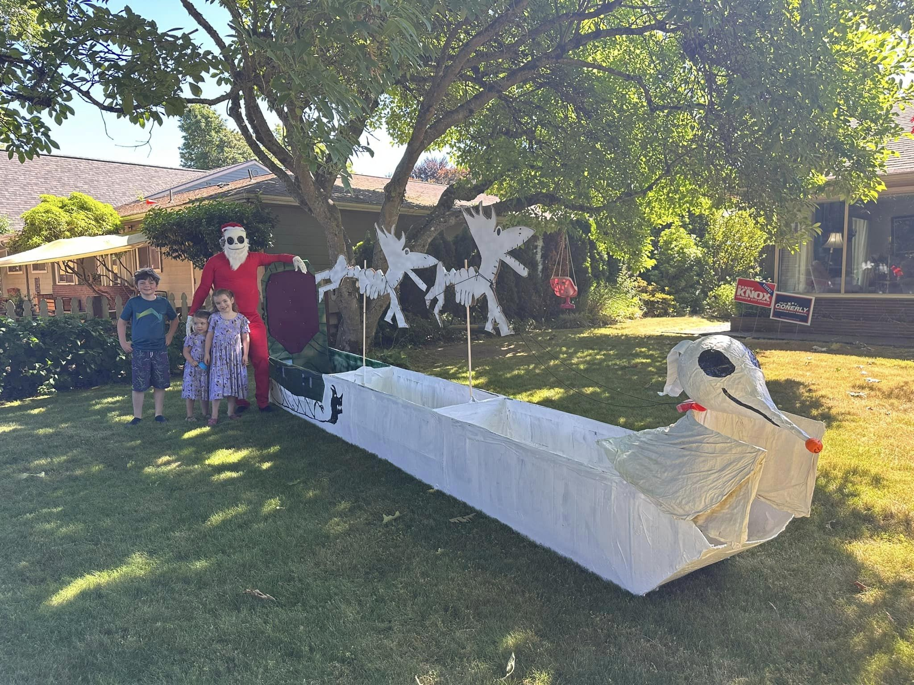
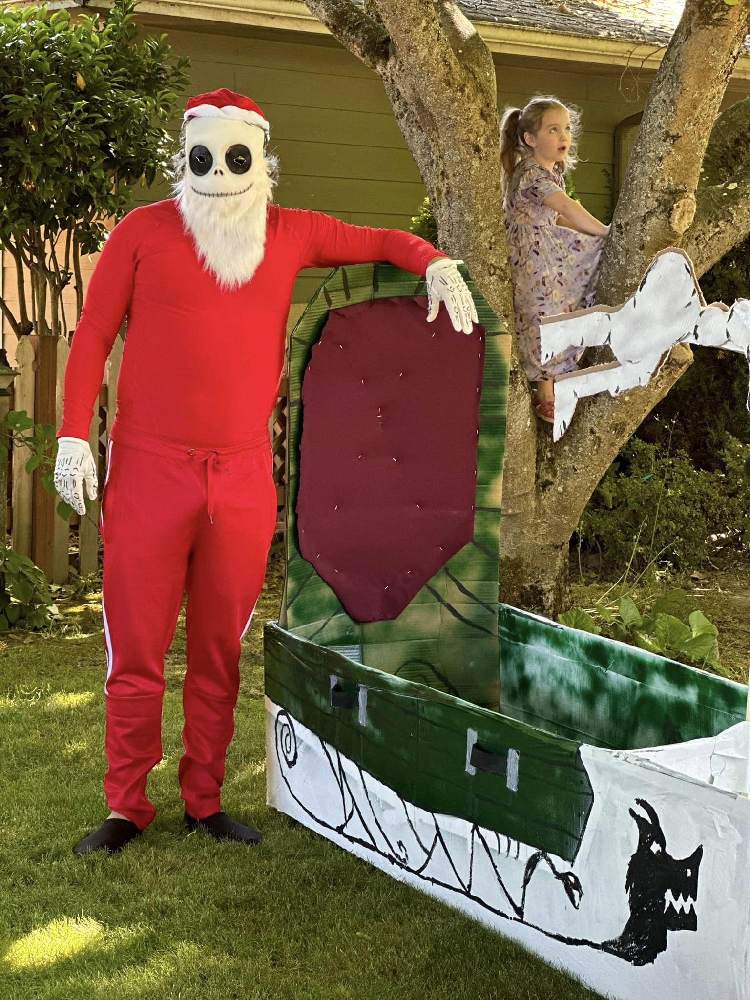
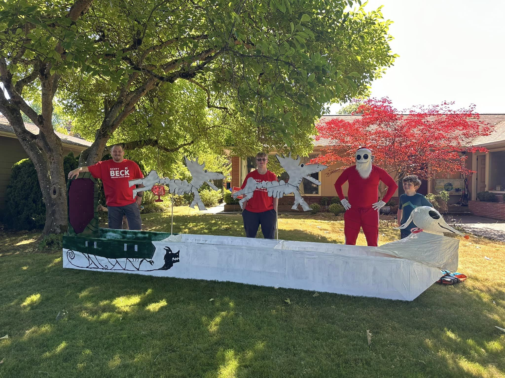
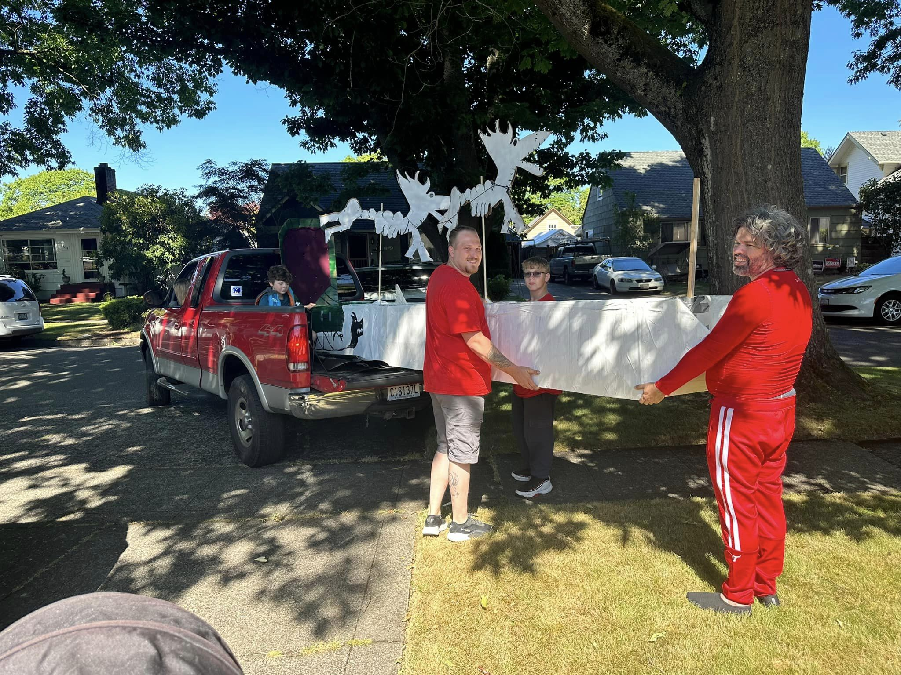
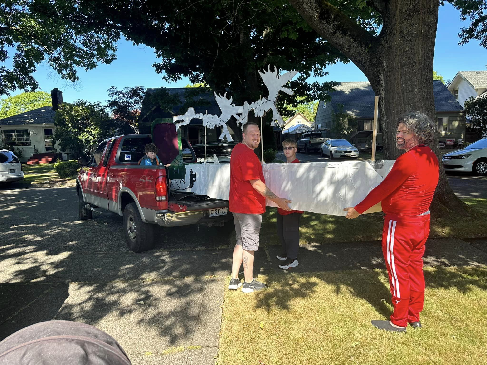
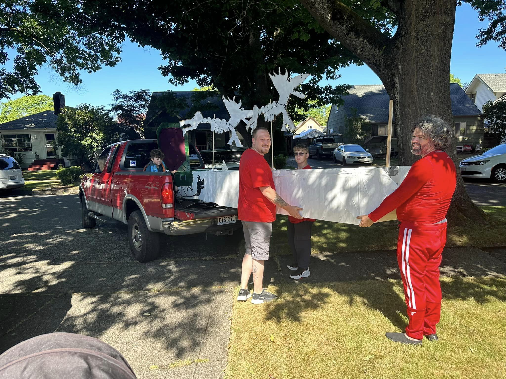

My father says almost the whole world's asleep. Everybody you know, everybody you see, everybody you talk to. He says only a few people are awake. And they live in a state of constant total amazement.
-Joe Vs. The Volcano
One of the most annoying user experiences is registering and trying to create a password that passes a bunch of validation rules, such as must contain a uppercase, lowercase, special character, etc.
This doesn't always create the strongest password, and more importantly it doesn't create the most memorable password.
Passphrases are way more secure and memorable, but sadly they won't pass password validation rules unless you sprinkle some extra stuff to remember on them.
XKCD does a good job demonstrating their strength:
Users should have the option of constructing a password however they like, as long as it is strong.
If you password was just lower case letters, then it's strength is 26^numberOfCharacters (because there are 26 letters in the alphabet, so if your password was 4 letters long, then there would be 262626*26 possible combinations).
Throw in some upper case characters, and it is 52^numCharacters.
Numbers as well 62^numCharacters
etc, etc.
The important thing is even if you just use lower case letters, the exponent is the most important thing, and that is the number of characters you type.
So with all this in mind, here is a validator function that will measure your password strength and give you some suggestions on how to make it stronger if it is too weak.
Validator.register(
"strongPassword",
(value) => {
value = String(value);
const containsAnUppercaseLetter = /[A-Z]/.test(value);
const containsALowercaseLetter = /[a-z]/.test(value);
const containsANumber = /\d/.test(value);
const containsASpecialCharacter = /[^a-zA-Z\d]/.test(value);
const numberOfPossibleCharacters =(containsAnUppercaseLetter ? 26 : 0) + (containsALowercaseLetter ? 26 : 0) + (containsANumber ? 10 : 0) + (containsASpecialCharacter ? 32 : 0);
const strength = numberOfPossibleCharacters ** value.length;
return strength > 1e13;
},
"Your password is not strong enough. You can add more characters, numbers, and symbols to make it stronger."
);
If you want to audit it before installing it, change the extension to zip, and unzip it (xpi is just a zip file). It looks like it was created by someone french, but the code is pretty simple.
I like to use my 3d printer a lot, but sometimes when there is a problem, I drop out of use for a while. Recently, a big ball of melted plastic formed around the hot end, and I didn't have an urge to fix it for a while.
Since we were doing the Nightmare Before Christmas as the theme for our cardboard boat for the Longview Cardboard Boat Regatta, Tara was making a Zero out of paper mache, and he needed a nice orange pumpkin nose, so the printer needed to be fixed up.
I heated it up to ABS temperature, and then took a sodering iron to cut off chunks of it, then pried off whatever was left. All worked great, and no that the pumpkin was done, it was time to do something else.
I hook up a laptop to my screen via usb-c and need a way to hold it vertically. I figured I should throw in some cable management, pen slots, and maybe some spaces to put magnets to put things like paperclips on.
First I started in Tinkercad with a large rectiliniar cube as a hole to represent the laptop, and then put it 4 mm above the ground. Then I stacked the other parts around it and added cuts. This is the primary mode I do for design. Add chunks and then do subtracts.
I also try to work with multiples/fractions of 12. Base 12 has the most factors (12, 6, 4, 3, 2, 1) and works well for keeping things scaled in pleasing proportions to each other (this is why lego is base 12, the imperial system works off of base 12, our clocks, western music scales, and many other things). So the height for the surrounding bases are 6mm high, and everything follows from there.
So off to the printer it goes, and here is the final product:
Longview has an annual cardboard boat regatta, and I wanted to participate this year.
The theme was Christmas in July, and my daughter Chloe's favorite movie is Nightmare Before Christmas, so of course we had to do that.
I had my neighbor Scott and my son Jevon help with the construction.
My wife Tara made the most awesome paper mache zero:
The boat ended up being over 16 feet long:

And of course I had to surprise Chloe with being Jack the day of (this is actually ella in the picture).



Chloe and me before boat launch:
The boat ended up being too long and unstable (we had 4 adults and 2 kids in it). Amazingly we made it through two of the races, but ended up being dead last in the second race as the boat had a turn radius of about a mile, and on the second race, started to turn into a squishy accordion in the front.
I have various timers. I use Time Out to remind me to take time away from my screen to walk around, play some violin, lift weights, or just grab a cup of coffee and take a minute to chat with my wife and have a moment with the kids.
If I am deep in thought or work or even some distraction, I will skip my every 10 minute break, but it is a reminder to assess what I am currently doing, and whether it is how I wanna spend my time (side eye look at social media sites).
On my phone I cap my time there as well. Some wellness thing that comes with Samsung phones lets you set the max time you use an app, and I limit my Firefox use. It provides some ways of overrides, but they are happily annoying to use, and so I only use them when there is something I actively need.
I use reddit on firefox, which admittedly is the biggest use of it. I uninstalled the app, and their browser version is annoyingly not built to endlessly navigate nicely. They do this to compel you to use their app, but I like it as it keeps me from descending too deep down that scrolling rabbit hole.
All this is to keep a mental awareness of where I am putting my focus so I can decide on it rather than just let impulse take control. The monkey brain is weak compared to the tsunami of distractions on the internet.
And here you are reading my blog. Are you gaining something from it? Is it enriching you life experience? Are you learning something? It is ok, if you are just wasting your time, just as long as you are appreciating the wasting.
I think that is the thing for me. In moderation I enjoy delving into a pit of distraction, and come out feeling refreshed and perhaps a bit more knowledgable. But sometimes, a day gets washed away chasing the shiny lights in the distance, and I feel disappointed in myself and reflect on not even getting anything out of the experience.
I start my day with a task list of to do items, and admittedly I rarely check off all the boxes, but to look back on the previous day and see a bunch of empty squares and nothing of an enjoyable experience to reflect on encourages me to check myself.
About 5 years ago google plus went by by, but I made sure to export using their checkout feature all the posts.
Turns out that I was a pretty prolific poster there with about 250 posts. Each exported file was a way too cluttered blob of html and style code.
I had the goal of copying them into this blog one by one by hand, but about 20 in I realized this was going to be impossible.
I dumped them into a new vscode project, and with some heavy leaning on Git-Copilot for making complex regex expressions I was able to siphon off what was needed from each file, and reformat it for the most part into something that could be used in this markdown formatted blog.
Copilot is great when you put in a comment about what you want to parse from a string, taking that and creating a regex for that.
If you are scrolling through, basically anything from 2018 back is from google plus. Later I am going to bring in my twitter and tumbler feeds as well as some of my stuff over on fb. It is time to bring all things back to old school with just a straight up anti-social networking blog.
Also with this, I will be bringing my youtube videos here, and not via embedding their widget on the site. It would be nice to just do it myself
So this marks about a year since I started charting my weightlifting journey, and for most of the exercises I have doubled my strength.
In my older age, I have found that more reps and less weight is the way to avoid pulling muscles - a thing that in the past has hampered progress, keeping my away from the weights for weeks at a time.
My goal has been to do 20 rep max for each workout, eeking forward 5-10 pounds each week.
has formulas that will convert any rep/weight combination to what you would lift as a 1 rep max, and the research shows the one by Wathen seems to be the best:
Experimenting myself one day with bench press, I can attest that it solidly was able to calculate my 1 rep max. I can also attest that such weights are really enough strain that it makes it more concerning pushing yourself so hard, when the same gains can be had on the other side of the spectrum.
If you would like to use these formulas in your own google spreadsheet, you can go to Data->Named Functions and add them:
ONEREPMAX
Takes reps and weight and will output your one rep max.
How much weight is expected for x reps. This is flipping around the equation to figure out weight you could lift at any rep range, given a one rep max value.
You could do something like
=XREPMAX(ONEREPMAX(110, 10), 15)
with a weight of 110 and a reps of 10, and see what you could lift if you instead aimed for 15 reps.
If you the labels for the workouts like Barbell Row 271,202,165, that label shows my 1Rep, 10Rep, and 20Rep calculated maxes.
All of this is just motivational though. The important is to step up the 20 rep max each day. And to really get the most out of the workout, when I don't hit 20 reps, then I force myself to lower the weight by 5 pounds at a time until I hit the 20 reps again. And 5 pounds at 20 reps, is like 8.25 pounds of 1 rep max (an added bonus is you need less plates as well)
But remember anything is better than zero, and being persistently bad is how you get to be good.
To help, log, chart, keep records of how bad you are with whatever you are looking to achieve. What seems demotivating now will help remind you of how those minuscule daily improvements lead to greater things.
I wiped out RobKohr.com as I haven't touched it in over 5 years, and replaced it with this blog.
It was built just using one long markdown file called blog.md that I edit in obsidian and each article is separated by ## Blog titles, and under that I use @date and @tags to specify those two values. Keeping with a brutalist design aesthetic, I render out those tags as well as the ## at the beginning of the headers.
The way it works is a build.js file that reads that file, splits it into separate articles, renders the md->html, applies some extra rendering and css, and spits them all out into a large collection of individual files. This makes for a very simple light weight site builder that is just serving static files.
Often you will get deep in some code and come up against a wall. After working through it, and reading some documentation, if you haven't figured it out, it is time to go to stackoverflow.
I have been on stackoverflow for a little over 14 years now, and while I don't answer a lot of questions (there is a lot of competition for that) I have a lot of questions that I have asked and have given me a pretty respectable score, putting me in the top 6% of users (https://stackoverflow.com/users/101909/robkohr).
The best things to do, is clearly state the problem, provide concise code that shows the problem in a reproducible way, and then state what you would like to achieve.
Sometimes when I work hard at making a clear question on stack overflow, I end up figuring out the answer myself. This is kinda like rubber duck debugging, but instead of a rubber duck, you are talking to the internet.
Then you end up with being the person asking and answering the question and giving yourself double internet points... which is oh so important :)
I kinda love going to a popular youtuber's channel, going to their videos section, and sorting by oldest.
What is now a polished producer of content that makes you feel intimidated to even attempt to make videos was once someone with a crappy camera, shooting in their back yard with a bad audio setup.
Everyone had to learn to walk before they could run. Whatever you do, that you are doing bad and are discouraged, know that failing is just the first step on the long road to greatness (or the medium length road to goodness if you don't want to overcommit yourself).
It isn't that you lack an innate gift that others have, it is simply that you haven't put in the focused effort over time to achieve. Just keep on grinding and leveling up, because remember, everyone sucked at first.
Just a word I gave up on trying to spell right long ago. I have never been a good speller, and I think I have a slight bit of dyslexia, so I never really saw the inner spelling of the word, but finally I just decided to split the word into pieces, and remember how the first part goes, and now it is easy :)
Anyway, I found this Labyrinth RPG game that is great for kids here:
Consistency is what I have been progressing more to. It helps to have lots of ideas and passion, but to do something big: build strength, learning a music instrument, run for office, build a side project, etc, requires doing something every day towards that goal in an endless way. I am actually doing all of those things right now, while raising kids and working full time.
To achieve it all - each thing needs 20-60 minutes per day to care and feed a goal to reach maturity.
I don't beat myself up though. I just have a daily checklist in a markdown textfile, and I can see how many I do each day and try to do them all. I frequently fail, but I try to get done what I can.
Finish up the analytics part, and then create a reddit clone on Neverall. The url could be something like neverall.com/n and then the subreddit name. I could have neverall.com/g be for games, and neverall.com/s for sites, and neverall.com/p for projects, and neverall.com/b for blogs, and neverall.com/d for docs, and neverall.com/qa for a stackoverflow like forum.
I have been working out using a google spreadsheet to track workouts. I aim to do a 20 rep max each week for each exercise that is slightly above the previous week. So far, it has lead to a nice continuous improvement... assuming I don't ever skip weeks. Each time I skip more than 2 weeks it pushes me back a little bit. More when I skip a month.
Using Wathen's formula from https://en.wikipedia.org/wiki/One-repetition_maximum for 1RM, I can calculate my 1RM from my 20RM, and I also use it to calculate my 10 rep max. After experimenting with it, I found it to be a really accurate formula as I tested it going down to 3 reps.
What this means for me is I can keep doing 20 reps as my target, and it will always keep my 1RM and 10RM improving. This is great as being someone in their mid-40s the strain on my body when doing lower rep maxes is not worth it as I frequently end up hurting myself with lower reps.
Based on the equation, an increase of just 1 pound in weight is equal to 1.64 pounds in 1RM. This means that I am increasing my 1 rep max faster by doing 20 reps than I would be if I was aiming on doing 1 rep.
For WFS I am working on the services page and the services need to be sortable in the settings, and then show the forms in the sorted order when making a new service request. Right now the order is hard coded, and each component has its own property set. I am going to create a wrapper for the components that will take all of the properties they need, and then pass them down to the component. The display order for the services can then load all of them in.
I am attempting to do this to make bread at home to help with Ella's gluten intolerance. Apparently even rustic breads from the grocery store are very high in gluten from the sped up process of bread making that helps keep it fluffy and more shelf stable.
I am hoping that more traditional sourdough bread will have more broken down gluten protein.
I have grown to love Obsidian, the notetaking app.
I use it as a place to throw ideas that I don't have time to devote to.
I use it as a place to keep a daily task list that I keep up with about half the time
I use it to write this blog here.
I think about making a blogging app, but I like what I do. I have one long markdown file with articles separated by headers and with some date and tags added to it.
I need to create something for my blogging better.
I have been playing with svelte, and liking it, but things just seem to mysterious. With SolidJS, I know what to expect.
I got to creating some input components with svelte and started to do a registration form. Going to try again with SolidJS to build the same thing. Let's see if it goes a little better.
Start a timer and see if you can beat your all time score. Just listen and talk to them. Remember, every 10 seconds you are on the phone, they are losing out on harassing someone else - you are really helping a lot of people and costing them money, thus destroying a bit of their scammy business. I call it being a telemarketing speedbump.
Find out everything about their product, but be hesitant and hard to sell to, but eventually relent. The best are vacation or auto warranty scams because there are an infinite amount of questions you can ask and ask again.
You will move up their call center to their top guys that close the deal. Then when you are need to give them your cc or ssn number, make something up. For the cc, use the first 8 digits of a real cc as those verify that it is real and associated with a provider. I then write out the last made up digits so I can repeat them. Each time you read the card number, read it fast, and switch around the digits and mumble.
Eventually they will figure out that you have been fucking with them, and oh boy the series of curses that will flow out of them. Eventually they will put you on a do not talk to list. They will call you, some times go “oh”, or maybe be pissy and hang up.
I think the service that calls you is different then who you eventually talk to. They hire the robodialer company, and sometimes they hire another agency to do the initial screening. Then they have the low level person that gets all of your info, and if they think they got a deal (a sucker) in hand, then they move you up to the real closer.
It is fun, and I have some made up names I rotate through and how many kids and all kinds of stuff. I am never rude - maybe a bit playful. I am not mad at the low pay workers that are grinding at this.
It is really their entire business that I hate. Almost all of them are built to fleece gullible people out of their money. Travel deals, auto warranties, student loan debts, computer virus fakers, amazon false charges, etc are not real businesses. Some really try to get into your phone and computer to rob your bank accounts. Student loan debt companies try to get into your federal student loan system and become your debt collector, but never paying off your loan.
They are EVIL, and the only way we take them down is by patiently talking to them… forever! If just 1% of people did this and acted like convincing targets, and kept them on for 10 minutes at a time, their business models would crumble. If you are reading this, you are now part of that 1% army that needs to be happily agreeable (but sometimes act skeptical to reel them in) to save the other 99% of mankind from this plague that has beset us. Take up your phone and take up the fight. If you record the call, post it up to tictok, youtube, or whatever with the hashtag #telemarketingspeedbump
And just like that, I now understand so many more aws services
I like that you can tap into things like brackets to work with quantum computers.
I still do think that AWS is like sticky fly paper to tech organizations. Yes, come use all of our fancy small services... oh, yes, you liked that, but now good luck every leaving.
And it works great on nerds like me who like to fiddle with something quickly, then start building a project with this new tool, and then it becomes part of a larger thing.
If you just get commodity VPS or dedicated servers, and spread them across different data centers and providers, you can achieve the same uptime, and with some open source packages you can achieve most of what those aws services provide for a fraction of the cost.
Being a fan of time travel movies, and my wife being a fan of romantic time-travel movies, this was an easy choice. This is a story of a girl who lost the love her life in a tragic accident, and getting a chance to go back in time to save him with at time traveling mix tape. The catch is that she can only go back to individual moments captured by the songs in the mix tape and only for the length of that song.
The love this couple felt for each other really got me in the heartstrings. If you have ever been truly head over heels for someone that you would be willing to throw your whole life away for them and even die just to be with them a little longer (or at least dream of that love) then this movie will be instantly relatable to you. This is not a cutesy Meg Ryan kinda romance. This one hits hard, and is amazing.
The time travel mechanic slice of the movie is also amazing as well. It is great with how limited it is, and the main character, with how deeply she is damaged with his death, and how much she wants to save him is reckless and not carefully logical with how she uses it, which helps create some pain for the audience, but in a good way, and the resolution of the what she chooses shows how she grows as a character and leads to one of the most satisfying endings I have seen in a movie in a long time.
This movie really has you connect deeply to her struggle, from the death that you can never get over, even when others are moving on, to the pain of having what you have be so close, but you can never quite fix things.
The lead character was deep, flawed, interesting, and so well formed that I could get a good feel on who she really was as a person. The boyfriend and sister also did a fine job, and it was a pleasant surprise to see Danny Glover pop up in this movie, and while old, definitely not too old for this shit. He plays a record shop owner, and general wise old man who dishes out some advice - advice that I found as questionable as the lead character found, but gosh did he do it in a charming way.
Anyway, go see this darn movie. It is currently streaming on Hulu.
My mind gets such a buzz from taking an idea and spinning it into the concept for a game and then making it so (the last part being so ardurious that it rarely comes into being). This fun open ended thought process that then needs to be rangled by the realities of time and effort to actually make it real, and if you don't wrangle it well enough, and commit hard enough, it just gets stacked on the bin of ideas that never see the light of day (which is surprising considering that that hill is taller than any mountain in the known universe).
I love the work that I do, but hell if I wouldn't love to be just making my income making games instead... but for myself, not working at a game company. That sounds about as much fun as loving donuts and getting hired at a donut factory.
The actual samples of things the press actually show from the rejection list are things like math textbooks using "What me, racist?" and then having the student use racial bias data that is questionable to solve a problem. This is subtly pushing the racial focused narrative, and they are finding it in a huge number of textbooks, which clearly is a way of pushing a message into kids with a million little cuts.
The message may be right or wrong depending on your opinion, but even if right, it is wrong to try to indoctrinate a belief by sprinkling it throughout all coursework. That is propaganda and with the subtleness that they are doing it, brainwashing.
Also, note that the American Federation of Teachers president that shared a list of banned books retracted it, because the books were not actually banned and the information was fake.
This is much more nuanced, and there is a real problem that is being addressed. If conservatives were controlling education and trying to insert their message everywhere in subtle ways to little kids, wouldn't you feel pretty pissed off? It is tempting to indoctrinate the mass of future adults with your beliefs through little levers as they are a captive audience in the education system, but that is not a situation that should be abused for even righteous goals. Let them form their own opinions and just teach them the subject they are being taught.
I looked up 2000's music yesterday on spotify. I am a child of the 80's and 90's and when I listen to music, I really lean heavy into those decades, and like most people when they hit middle age, they tune into the newest music on the radio, and feel that the music of their childhood is way superior.
We are now in the 2020's, and so the '00's music would be basically retro today, as depressing as that sounds. Also, admittedly, I don't know any of the music except for a few hits from the 2000's, so I was surprised to be enjoying the mix, where I was hating the current top 40's.
Then I was hit with a realization... and probably a pretty obvious realization.
This realization stemmed also from listening to top 40 countdowns by year from the 80's and 90's...
Whatever the time period, most music kinda sucks. Those songs from your childhood - they were the cream of the crop; the ultra-fit songs that survived the brutal process of musical natural selection. There are plenty of them, but they only account for 5% of the stuff that was playing on the radio all the time. This is why you remember them. It was exciting when something really good came on the radio.
This is why the 2000's top hits mix is so much better than what is in the top 40 today, and even without the rose colored lenses of nostalgia. They are the ones that people made sure to include in the mix, and it is chosen from a full 10 years of music. Radio stations that are playing the newest hits, aren't playing things from 4 years ago, because it has become dated and it isn't hip, but when that music graduates on to a decades channel when those that are young and hip now become adults, they will continue the trend of thinking their music was the best.
Yeah, nostalgia makes the decades you grew up in warm and fuzzy. But go back and listen to music of the 60's and 70's, eras you didn't grow up in, and that music is also fantastic, even if less familiar. It is simply that choosing the top 40 of a decade 10 years after that decade ends will result in a much better collection of music than if you are just choosing whatever is in vogue today.
This can be extended to movies, clothing fashions, cars, catch phrases, and anything. The stuff that was good enough to stick in your brain 10 years later has battled it out with whatever was cool at any time, and yeah it might have been played out at the time, you can be damn sure you are singing along and talking a yarn about how great it was today to your kids who just look at you as some senile old parent who just doesn't get it.
Put a note pad next to your bed. Write down everything going through your mind. Keep writing while you are thinking until everything is covered. Now no more reason to think about things and you go to sleep. You can review the stuff when you wake up.
Allow 30 minute blocks for things, and only have one active task at a time. Count how many 30 minute blocks you use... this should be equal to the points... maybe? Not really very scrummy, but might be a good thing to track.
(There are also some other videos of him talking about creativity)
Creativity is derived from play.
We exist in one of two states: Open and Closed
Closed is for when creativity is decided on and should be the follow up to being open. Don't try to be creative when closed, focus on implementing - kinda like if you are doing a motorcycle jump, you don't want to be thinking of how to change it up when you are in the processes of making the jump.
The open system is where creativity flourishes.
It needs the following:
Space
A place carved out without any tasks to do.
When you are in this space, you will start out trying to think of all the things in life that you need to do. It will take some time to get over them, but don't engage with them. Don't try to complete any tasks in open mode.
Time
A set of time with a specific endpoint. This part is important. It isn't playtime without an endpoint to play. You need to have more than 30min to get life tasks out of the way though, so don't choose too short of a time. Also, it can be exausting to go for too long. Having 1.5 hrs should be the cap.
Time (yes again)
When you come up with an idea, don't just grab it and go with it. John talked about a fellow script writer that did this and that persons scripts were as fully realized.
Let the idea set and keep playing with it.
Also keep in mind there is nothing right or wrong. Throw out complete drivel. Good ideas are often the joining of two concepts that lead to something greater. But there are an infinite amount of bad combinations. Feel free to explore whatever, as sometimes bad combinations lead to great ones.
Confidence
There is nothing wrong and there is no mistakes. Let Humor rule as that can lead to great things. You can still be funny with something serious. Avoid being solumn. There is always room for levity in coming up with solutions.
When exploring ideas, just keep thoughts gently around the subject matter, but don't worry about being to tight. As long as it lightly is grazing the goal, it will settle back into what you are looking for.
Always be positive and avoid saying no... kinda like sketch comedy, you always want to give a path for more and not shut things down.
Phrases like:
Go on
can you explain that better
He finishes off talking about how the japanese have meetings with no plan, and importantly let the junior people talk first. This way, they don't have to be in a position where they would have to disagree with their
superiors.
Having a family, side projects, main work, hobbies, etc can just be too much to keep track of, and also to allot time to. How often do you say "I'll do X around the house" and you just never get around to it.
Recently I have fallen in love with Pivotal Tracker for work purposes in managing tasks, and have replaced my text based task tracking system with PT for my personal life. What is nice about PT is you don't decide what you can accomplish in a sprint, it tells you based upon the average of your velocity in previous sprints. You can resort the backlog to prioritize things, but the sprint end marker will still just envelope a certain number of points.
Put too many things in your sprint, and you might not get to the things you wanna do, but you can easily see that happen before the week starts.
To make things better from a planning point of view, I add 7 epochs labeled Monday, Tuesday, ...Sunday. I put them in the sprint so I can figure out what I am going to do that day, and mark the day as done when all the tasks are done that day.
Lots of labels are used for what kind of things that need to be done, and all this helps me balance work, fun, chores, etc.
The mobile app for PT is pretty snappy, and allows for the creation of stories without any details really quickly, and puts them at the top of the backlog, making it a handy todo list app.
You can also use PT workspaces to see a combined view of different projects and your personal tasks, but I found it more clunky, and just create clone of work tasks in my personal tasks project.
After working with typescript a lot on work projects, I typically skip it on personal projects as it just seems tedious at times.
Well, I just threw it into the neverall project while working on an alerting system, and by golly did it help clean up some things.
The issues I find are related to the type "any", which seems like sacrilege to use in projects, and for good reason. In a big team, it is easy for an individual contributor to fly under the radar tossing any in all sorts of places.
The flip side of it is that the ROI on sorting out some type stuff is just not worth the effort. Yep, it might come bite you in the ass, but sometimes mitigating the risk just takes too long, and for personal projects, the in between of sometimes using any when you don't really care is nice.
Throw in other devs though, and banning "any" starts to look real attractive.
I wonder how long it took to create this script and how much it was don't virtually without the machine, and how much of it was done directly with the machine.
These are glorious self balancing machines that have perfected the challenging AI task of physical motion. It is important to remember though, that they have no understanding of what they are doing, and the amount of work to create this dance number was mind boggling.
I could see these things dropped in a battle field, given waypoints, and objectives to shoot anything that looks humanoid or moves. They'd be dumb as dirt, but still very dangerous. It makes me want to think up what countermeasures would be effective ... false targets, traps they can't handle that humans have no trouble with, body shape camo, etc. Then there is the difficult task of taking them out as shooting at them would be marginally effective.
Other fun bits would be that they would be cheaper built and more mass produced in a war setting, but power consumption would always be a thing for them. The walking robot probably would keel over at 20 min, where the wheeled one could go much longer, but have a tougher time with rough terrain. Then there is the cost/benefit of using these vs just bombing an area. Bombs would be cheaper, so maybe this would be more of a semi-autonomous thing that went with a group of troops and kills would be more guided, and built around securing an area but without total destruction.
Communications with the devices would be key, so having soldiers close by and in the loop would be important. And of course, this tech, while impressive, will be easily replicated over time. It'll be interesting to see how forces fight against each other. Probably going after the living soldiers controlling the machines would be more effective then having machines just slug it out with each other, but then, having further tele-presense would be better, and then you come back to the distance => easier signal interference.
The paper-rock-sissors of future wars will be fascinating to those don't have to be in the thick of them.
Cohesive colors is a color palette randomizer that does a great job picking a set of 5 colors that work really well together, and also allows you to throw a hue adjustment on them all.
This would be good for a quick way to colorize game levels or websites to make them look distinctive without too much effort.
For websites, I like to come up with a set of base colors, assign them to variables, and then lighten them to various degrees to use in different contexts.
Pixlr photo editor really fulfills what I am looking for in a photoshop replacement without spending big bucks on what is basically 31 year old technology.
As someone who way the hell back in the late 90s liked to do silly things with mashing up different photos and doing basic things with the magic wand tool, layers, and doodling, pixlr gives me what I need. Yep, I am far from a graphic designer, and my needs are probably basic compared to professionals in the field, but as far a graphic editing ability compared to fellow programmers, I am pretty good, and I don't run up to any limitations in doing what I need with what it provides.
Each of the tools are detailed with many sliders and adjustment factors that are easily used. Layers work great as do transformations. The pen tool works great with different sizes and strength.
Since then, I have built up a huge list of projects I would like to build, I get started on some of them, but then fail to get them off the ground.
Issues that I blame on this:
I also had a messy divorce and custody struggle that for a good 6 years encompassed all of my attention (and a good chunk of $money), making it pretty impossible to focus on anything else, and really got me out of my routine for doing side projects
Being overcommitted to work
decision paralysis - that big list of ideas is so big it has it's own organization structure. Settling down with one idea is really challenging
I am ADD as all hell (like 100% on most tests)... hence the giant list of ideas
The startup to any project involves too much overhead to keep me involved.
Ok, I am working my normal job, and I am creating a new project: creating the css, the layout, the database, the authentication system, the different pages, etc, and by the time I get to the meat of what makes something unique, I am on to the next project.
The first of these bullets is "resolved", the middle ones aren't really resolvable, but that last one, I think that is tackle-able, and able to be handled with my scattered mind.
So I created a website called neverall.com (the domain name was from a domain name generator I created called mixmatch.com that helps you find short domain names). I also created a single create-react-app repo for neverall.com, and am using it for a rebuild of the godot asset store. Instead of creating a bunch of domain names and a bunch of git repos and separate projects, I am going to build one site to rule them all, and everything will just be basically a "subdirectory" of neverall.com. This will have a few benefits:
All of the basic site setup stuff will always be there, so it will be easy to just create a new directory and use the same common db for all of them
Improvements to the design and components can be done all in one place, and so everything gets a face lift (though I do like individual projects to have their own look and feel)
A little SEO hacking as projects on different domain names don't share page rank, so my projects don't really help eachother out much, except for interlinking.
This last point is an interesting one, as it is nice to tell people, check out someCoolWebApp.com instead of neverall.com/someCoolWebApp.
The thing is, both are things that can be done at the same time. Using nginx, I can point all of the domain names to the same code base, but when you go to someCoolWebApp.com, it will show you the same content as neverall.com/someCoolWebApp, and this can all be handled in the React router code (I use reach router, which is awesome).
Now, duplicate content on the internet is a big SEO no-no, and google will ding you hard for it. Also, all that SEO juice flowing to someCoolWebApp.com doesn't benefit the collections of other apps that I am building. ... except it can!
Canonical URLs are things you can put in the head of your site documents. They tell google where the "real" original content is, and so that real content gets the SEO page ranking rather than wherever people are linking to. So I can tell everyone all about someCoolWebApp.com, and they can all be lining to it, but really neverall.com/someCoolWebApp.com gets all the benefits.
Another side benefit is that since everything is in one repo, I can bounce around between directories, reuse components, and work on whatever I feel tickles my fancy any day without having to decide what repo to work on and just being stuck on that. I can start writing code anywhere for anything and it will be useable without needing to start up much or even finish anything at any time.
All in all, an experiment into ADD programmer side project productivity. Maybe I will update you here on the progress... or maybe I will just be creating things.
I have a bit of a thought that 3d printing boardgames would be great, particularly portable ones with
nice cases.
For sizing, I am thinking of basing it off of the iso 216 paper sizing formats. Most people will think of this relating to the A4 printer paper size.
The reason for focusing on this format is that is a standard that works well with doubling. There are 3 sizings in this iso standard. A, B and C. For reasons that I am not sure I fully know, B is the biggest of the lines, and then C, and then A. What is nice about this, is if we use size B6 for a standard sized box, it is 125mm x 176mm, and A6 paper is 105mm x 148mm. This means the box will fall nicely inside the print sizes for most printers, and make it possible to print pieces beside the box so things can be printed in one shot, and A6 paper can be used as the print size for instructions. A6 paper can be made by cutting an A4 sheet into quarters, so instructions could be print on A4 and then cut into 4.
The boxes will have an overhang at the top so that game boards can be stacked. The lid can be a simple circle with a finger hole in the middle.
One issue is that with this being the size of a b6, two b7's couldn't fit inside since the lips would push up against each other. One way to remedy this is to only have two sides of each box have lips on that stick out on the sides like so:
So two half sized boxes can fit into a rim of a lower box and then they can tightly stack on top of each other.
Alternative idea: have no sides stick out, and then have pegs that stick out of the top of each lid that fit into holes in the bottom of the box above it. The floor thickness would need to be such that it can accommodate that.
This might be simpler, and as long as the hole sizes are big enough that they don't grip the peg below. This can create issues though as having holes on the bottom of models can create issues.
One thing that I find that helps is to open up a text file and start typing what your thoughts are and be unfiltered (I sometimes look away from my screen so I don't proofread). Try and get everything out, and let yourself brainstorm.
Keeping it all in a conversation in your head creates too many threads to keep track of and you end up looping around worrying about this or that.
Then after that, I take the blob of text and try to organize it into categories such as "issues to resolve", "action items", … etc
Writing also slows down your thoughts a bit and keeps you from bouncing too much.
Some games like strategy war games, which I have a great love for, make great money, and there are also very few of them. Other games like puzzlers are plentiful and don't make much. He also goes into the normal lifespan of a game and its revenue stream which tapers off after 5 years.
There were so many good tidbits in there, and even a multipage spreadsheet of useful sales data, which is like gold now that steamspy can no longer function.
One thing that seems to really make great money is the tag "moddable." Definitely not easy to do in something like godot (or anything else for that matter) but it seems to make a big impact on profitability.
I looks pretty clear that subfolders are the way to go.
With a single server with nginx on it, you can reverse proxy to multiple servers using the location /somedirectory tag.
I am pondering the idea of making a bunch of mini apps, and then having them all under one domain (maybe this one) and then using subdirectories rather than creating separate names domains for everything. As of right now, this site is just me talking to myself as viewership is basically nil.
As I am coming back to working on instaboardgame, maybe it should be under tentoncreations.com/fun/boardgame. Cueflash.com could go under tentoncreations.com/flashcards. Constantsail.com could go under tentoncreations/fun/constantsail.
I might not want to do that with editthis.info as the content on there can be adult in nature, and would make it so google adsense wouldn't be allowed on the other sites.
This blog could end up going under /blog, or just stay at the root.
I was also messing around with wordoid trying to come up with something shorter than TenTonCreations.com. It is a tough call as that is a pretty long domain name, but it is easy to spell, and I think sounds pretty cool. It also makes more sense then undrix.com or lagon.com (two examples of available domain names). The choices between short and meaningful is a tough one with domain names.
Some sites I am thinking would be good to build: a site for feedback.
Nuclear weapons are the reason we haven't had multiple world wars since WWII. The game mechanics of warfare changed when any major conflict could lead to complete annihilation on both sides.
All wars since then have only be proxy wars through countries that are not nuclear armed. It makes it clear why countries such as NK and Iran would like to have these weapons. It makes them essentially un-invadable.
It reminds me of the movie bedazzled. I could imagine someone war-weary after WWII making a deal with the devil to make it so no major war won't happen again in their lifetime, and the wish was granted with nukes.
I wonder how many lives were saved by making the cold war not a hot war thanks to nukes, and if long run the debt of saving all those lives will have to be paid in full plus interest.
I used Grommet for a react project, and here are some of my thoughts on it.
Things I like
Works out of the box for most use cases
Nice for form elements
Gives a standard look and feel for the site without any need to work out details
Things I don't like
A grommet element is a wrapper for an entire dom structure that you can't directly style as it doesn't have any classes you can apply css to; a simple parent classname that you can have as a starting point would work wonders
The Box wrapper and other wrappers for grid layouts just reimplement html features but in a more limited and difficult to adjust way
It basically sucks for doing anything new stylistically (such as building a static landing page).
It's design is kinda bla and minimal as far as customization
If I were to do a application in the future I would:
I'd still use grommet for all of its components, but not it's layout
Create a thin layer interface over grommet that just passes down props. This way a mvp can be quickly pushable, but the styles would be easily updatable
But more likely, unless styles don't matter at all, I would just do my own component library based on mocks as really stying components isn't too hard
Well structured scss is really easy to manage, and while grommet is good for building quick and dirty UI, scss custom built ui components are better to build for a project that is going to be something that will be used for a long term project.
When doing react, I have on worked with CRA up until now. I just took over a next.js app, and when built and deployed, it is speedy, but didn't like some of the details of development:
myApp/pages/page-name/index.js is how you create a route for /page-name. While quick and friendly, I prefer the following:
Defining my own route rules in details with reach-router. I am just to particular about routing to accept the trade off of simplicity against customizability. Also, defining routes is simple, and it is good for rearranging things without renaming components.
I really don't like dozens of index.js files in my codebase. I prefer to call pages pages/page-name/page-name.js so it is clear by the file name what things are for.
making changes when development are a little fluky when it comes to live updates, css doesn't seem to live update nicely, and there are just too many times that I have to kill the server and restart it to see my changes. This is even worse because it all seems unpredictable as to if/when changes would appear and a little frustrating
These are little nitpicks, and if CRA didn't exist, I would go with next, but I love the way CRA is more customizable regarding routing, and is just snappy for responsiveness. I also feel there is just too much gray area as to if something is being rendered on the server or the client, and as an ex-apache/php guy, I really am not a fan of worrying about server side rendering anymore.
The case where I would likely use next would be if I were building a static content based site where SEO and first page load times were everything. I also know gatsby is supposed to be good for this too, so I would do some side by side comparisons. Also SEO with react is pretty good as is.
In the end though, that isn't really something I do much of, so I'll be on CRA for the forseeable future.
I have a problem with time wasting websites such as youtube, facebook, twitter, etc. I start going down rabbit holes that suck away my work day.
As such, I am putting all social media sites on a 7 day time out. I have added them all to my /etc/hosts file so that visiting them just goes to an error.
Also, installed the mac app called "Time Out" which every hour forces me to take a 10 minute break, during which I am allowing myself some time to work on my current task list, draw pictures, play piano, or write articles like this in my blog (the app covers the screen with a semi-transparent image making it so you can't click a mouse, but you can type, which is great a forcing what kind of things I can do).
The idea being that taking 10 minutes out of my day to unfocus from work will allow me to think a little more, and instead of distracting myself with social media, I can do something a little more meditative.
For the last few years I have been using cloudflare in front of editthis.info. On the 21st I dropped it, and saw an immediate decrease in average load times (from google analytics):
This was without any changes to the system at all, and with about 800-900 active users per day.
Also, as mentioned in my previous blog post, in cloudflare's dashboard, it reports a massive number of malicious attacks that they have thwarted.
These are either inflated numbers, or more worrying actual users who couldn't get past their overly vigorous captcha screening process.
I look forward to seeing how this effects user counts overall - some could be from the speed boast and some from lack of captchas. In either case, I won't be using cloudfront again. I am going to set up a simple nginx proxy in front of the website, and implement some caching there to help increase the speed even further.
My wife and I went to Disneyworld for our honeymoon this month and it was fantastic. Due to pandemic fears, flights were super cheap, the disney resort was discounted and nearly empty, and lines were nearly non-existent at the parks. Most rides were about a 5 minute wait, with some of the more popular attractions taking about 30 minutes. Compared to a typical 1hr+ for wait times for major rides, this meant going through a lot of rides was a breeze.
Some downsides:
Masks weren't pleasant in the Florida heat, but some light cloth ones worked out ok.
The parks closed early, so they were only open about 8 hrs, which means you can't be to leisurely about trying to hit all the attractions
due to social distancing, restaurants cannot handle many customers, and so getting reservations for everything is required
Most of the small food places were closed, and walking with food was not allowed
No end of day fireworks since parks closed early
No live shows
Apparently no housecleaning for the rooms
Small kids have to wear masks. Seriously, 2 year olds are being required to wear masks.
The upside of being able to practically have the park for yourself is great though, and worth the tradeoff if you aren't bringing little kids with you. We'll be taking them to Disney sometime after the world stops being ruled by hypochondriacs.
EditThis.info has long been overdue for an upgrade. I've been postponing it for a while, and now that I have just finished a big move, a wedding, and a honeymoon in Disney (covid be damned), I am circling back on it.
Task list (this article will be updated as things are completed):
Clone current server instance
Remove cloudfront - it constantly causes problems, and I think it is blocking a lot of users worldwide that it considers "malicious"
Set dev.editthis.info to new server instance
Add nginx with caching (this will hopefully fulfill the role of cloudflare better as I can customize it as needed)
upgrade php
upgrade mediawiki
Convert an absurd of dbs to the new mediawiki db structure
Point editthis.info to new server
Along the way I expect a lot of hick-ups and course corrections, but EDI is a very active site despite it's poor network performance. I think it is reasonable to expect that with a bit of an overhaul I can achieve a 10x increase in usage, which would make it much more lively than it is now.
Screenshot showing how much cloudflare is blocking (basically a count of failed or skipped annoying captchas):
Instaboardgame will be a place for people to instantly play and create boardgames with their friends wherever they may be.
Think of it like a big box of board game pieces that you can pull out and start playing with.
To start with, you create a table, then you can either import in a prebuilt game, or you can
pull out pieces and drop them in, and you and others who have joined can start playing with them.
Only the table creator needs to have an account, and users can just join with the private share link that the creator provides.
Table creators can have up to one free table per account, and that table will maintain it's state for up to 1 week. If you have a subscription, you can have up to 5 tables and they will maintain their state for as long as you like. If you have a pro account, you can have up to 100 tables that you can manage, and you can set users to be admins of the tables. This is ideal for tournaments.
I use rss feeds, reddit, twitter, news sites, etc, etc, but the most distilled grouping of great new things to read on the web regarding programming, science, design, and many other things is Hacker Newsletter. It is a weekly email newsletter that is a curated list of the best stuff that appears on Hacker News. The trouble with hacker news is there is too much content and the top list of articles are by popularity rather than quality, so it provides lots of distraction, but without the focus on substance. Hacker newsletter fixes that with some excellent curation.
Last month I made a doodle post of an idea for an instant online board game system.
Well, progress is coming along fast:
So far I have:
a react site which directs /game/test to a test boardgame
Websocket connection where you can move around game piece elements
A component hierarchy where every piece type passes props down to possibly other piece types, to then load in the Piece component. This should allow for a rapid development of lots of types of pieces, as the details of each are just specifying what makes it different from a different piece. Examples:
Chess pieces would remove other pieces from the board if you put one on top of another
Clicking cards will flip them over
clicking decks will pull a card from an array of cards and put it on top of the deck
clicking on a dice box will roll the dice, and there will be an area to manipulate what dice are in the box
A json structure for a game where piece components are specified, and the props that go down to them
A reducer coding system which will minimize the size of updates coming from connected clients
Current tasks:
Authentication
Membership - allow access to premium games and ability to have more than 2 tables
Create game table
Auto save games to mongo
Load and unload games from memory
Set your player #, icon, color, and name (allow spectators?)
Certbot is the tool from letsencrypt.org that lets you generate ssl certificates for your site without having to pay the likes of Verisign ever again. Basically I love the heck out of them for what they do.
Nginx runs on your server to redirect examplesite.com to localhost:1234 if you happen to be running your node express server on that port.
Now if you want to have a socket connection to your server to receive constant updates(for example if you are building an online sandbox styled board game system) you could use the npm module ws to create that websocket for your javascript code to connect to on some port, such as port 8080. This however will not be encrypted, and it will also be kinda ugly and not firewall friendly since it isn't running on a standard open port.
But you can run all that through nginx so that you get to have ssl encryption and also use the same port as your node.js express server.
How to do it
For the client side javascript, you can route your calls to wss://examplesite.com/websocket
In the nginx config, set up the connection to close when header is set to ''.
create an upstream to your websocket port
add the /websocket location
map $http_upgrade $connection_upgrade {
default upgrade;
'' close;
}
upstream websocket {
server 127.0.0.1:8080;
}
server {
server_name examplesite.com;
location /websocket {
proxy_pass http://websocket;
proxy_http_version 1.1;
proxy_set_header Upgrade $http_upgrade;
proxy_set_header Connection $connection_upgrade;
proxy_set_header Host $host;
}
# after this is just an example of the rest of the nginx config for a node server on 8675
# that has a static build directory (for react or whatever)
location / {
proxy_pass http://127.0.0.1:8675;
proxy_http_version 1.1;
proxy_set_header Upgrade $http_upgrade;
proxy_set_header Connection 'upgrade';
proxy_set_header Host $host;
proxy_cache_bypass $http_upgrade;
proxy_set_header X-Real-IP $remote_addr;
}
location ~ \.(gif|jpg|png|js|txt|html|mp3|css|woff2)$ {
root /root/examplesite.com/build/;
expires 30d;
}
listen 443 ssl; # managed by Certbot
ssl_certificate /etc/letsencrypt/live/examplesite.com/fullchain.pem; # managed by Certbot
ssl_certificate_key /etc/letsencrypt/live/examplesite.com/privkey.pem; # managed by Certbot
include /etc/letsencrypt/options-ssl-nginx.conf; # managed by Certbot
ssl_dhparam /etc/letsencrypt/ssl-dhparams.pem; # managed by Certbot
}
You can use https://www.npmjs.com/package/wscat to test out your local ws://...:8080 and your wss://.../websocket connection, and both should now return the same thing.
And it looks like a fun game to play, especially with some jumbo index cards.
Some ideas for a good ruleset based on what I read in the forums:
At the beginning of the first game, each player makes 6 cards and leave 4 blank cards. All cards get shuffled in. On subsequent games each player makes 4 cards, chooses 4 cards from archive, and also inserts 4 blank cards.
Each player draws 5 cards from the deck
The starting ruleset for the game is draw a card, play a card
If you have a blank card in your hand, you can turn it into a new card. New cards should have a name, a drawing, a type, and a description.
The game ends when there is no cards left to draw
Each card is one of the following types:
action - do what it says and then discard it
thing - modifies a player state (add/subtract from score score or giving a special ability). Place in front of you (keeper) or another player (giver)
modifier can be played on things to change them - such as give them armor, make them bald, fast, green. Could change values of the card it is modifying
new rule - change how the game is played
Point values for things can range from -100 to +100
Actions are usually discarded after play
Cards can have suits (I am thinking colored stampers) and colors which makes it so they can be targeted by other cards.
No skip turn cards - seems to be the least fun cards
React hooks is what got me to actually like React enough to make it my primary web development framework (at least at this date). They break away from the ugly class based heavily nested object form of React, and make it truly more functional, while giving allowances for managing state in a stateless system.
The first thing to grasp about react is that components re-render with every change in the props that come into them, and thus every time they are run (which is every time an input changes), all internal values are wiped out. It should also be noted that internal hook state changes also trigger these re-renders.
The following hooks help keep all of this from getting washed away with each re-render so that your components can continue to function.
useState
This one you will likely use the most.
const [state, setState] = useState(initialState);
Sets a value for the initial state, and gives you something to update that state with setState.
Updating the state will cause a rerender, but the state value will be maintained.
Note that the left hand side of the equal sign is an array, not an object. state and setState are variables that you make up, and could be called anything, and it is really the order of the outputs from useState that causes state and setState to be set correctly. For example:
Would be how you would track the state of the burgers in your cooking app.
useContext
This can be used to subscribe to a context value set higher up in the tree.
function Grandparent() {
const [favoriteColor, setFavoriteColor] = useState('blue');
return (
<FavoriteColor.Provider value={favoriteColor}>
<Parent />
</FavoriteColor.Provider>
);
}
function Parent(){
return (
<div>
<Grandchild />
</div>
);
}
function Grandchild(){
const grandpasFavColor = useContext(FavoriteColor);
return (<div>My grandpa's favorite color is {grandpasFavColor}</div>)
}
useReducer
Outputs a state and a dispatcher. The dispatch is a function that will call the reducer with the current state and an action, and that reducer then returners an entirely new object that is a mutation of the original state to provide a new state value.
This is run after the page renders, and if you leave out the dependency array, it will rerun every single time. Usually you only want this to run once though, so setting it to depend on some variables changing, or at a minimum, just passing it [] as the second parameter will keep it from repeatedly running
useEffect(
() => {
/*Do something just once after rendering, unless depends array changes*/
},
[somethingToDependOn],
);
useMemo
Only re-run when the dependency changes. This is useful for expensive calculations. It can be used as a watcher for a dependency that will then cause a function to run.
This will update the messageHistory every time a new value comes in for lastMessage
useRef
const refContainer = useRef(initialValue);
Returns an object with a property .current that you can mutate whenever. The object will persist and so you get to keep access to current. This is sometimes used with
<div ref={yourRefObj}>. When react rerenders the dom, it will reapply your object to it, and your yourRefObj.current will always point to the dom element
useCallback
Stores a callback on a variable so you can use it on children elements and won't cause a render of the children for every time the parent changes. Since in the below, the reference to onChildChange always stays the same on re-renders, it makes it so <Child> doesn't detect a change in it's passed in values.
We use "a" as a dependency so that the callback is updated when the state of "a" is updated.
I am going through my notebook directory where I have a bunch of little jottings, and these next posts are from those files all brought into this blog so they can be deleted.
I think of this as a partly as keeping your eyes open to when the sun shines... which is when opportunities exist... and actually taking advantage of the situation. This is always a challenge because you have to act and act quickly, when it is so much easier to let the opportunity slide.
A boy will dabble in a thousand pursuits and then drop them when he gets bored or they become too difficult. A man will always finish what he starts.
This one I disagree with. I like to go with Adam Savage's style where he has multiple projects going simultaneously, and just jumping on what interests you, even if it means having a dozen half completed things. This makes it so something is always moving forward, you are following your passions, and you don't get into creative blocks. This only applies to creative pursuits, and for those, it is when you switch to another task, not when you just walk away from doing anything to watch tv.
Make it your goal to have your children say about you what Theodore Roosevelt said about his father: "My father was the best man I ever knew. He combined strength and courage with gentleness, tenderness, and great unselfishness. He would not tolerate in us children selfishness or cruelty, idleness, cowardice, or untruthfulness.
Love this. It gives a solid list of traits to exemplify and be a role model for your children for.
If we play'em 10 times, they might win 9. But not this game. Not tonight.
Even when the odds are against you, remember that sometimes luck is on your side, and you can make some of your own luck. Sometimes you have to accept that failure is the norm, but going into an area where failure is the norm can provide major upsides and enjoyment and growth.
Weighted task chooser is a command line node script that will select a randomly weighted task to do out of a tasklist markdown file.
So you have a list of tasks to do in a markdown file:
Task 1
Task 2
[4] Task 3
Subtask of 3
Task 4
Some notes on task 4
Task 5 - done, don't every pick this
Task 6
This will randomly choose one of the parent tasks from that file. It also does weighting, where each task has a default weight based on the value in the brackets.
This is really a heavy "it depends". The goals of making it so you have one source of things to be debugged and modified are great when we are talking about a decent number lines of code (or more importantly conceptual pieces). The other side of things is that DRY pushes to creating modules/components/functions that are nameable sections of code that increases readability of the code. An example of this is to take 20 lines of code that does one "Thing", and replace it with a function call to Thing() that contains those 20 lines. Yeah, you don't save anything as far as line count of code, but you make it so when reading things, you don't have to parse apart the functionality of that 20 lines, and you can test it and know you never need to think about it again besides calling it's name.
The DRY to WET side of things start to slip over to the wet side (pun intended) when the cost of making it DRY and the ongoing costs of the DRY structure is more then just leaving it wet. This typically comes from when over-engineering leads to a tower of babel like structure of things wrapping things wrapping things to the point where it becomes challenging to make a change:
Having to digest the stack to understand the inner parts to find out where a change needs to happen
Dealing with the unintended consequences of the change on other parts of the system (regression)
Being straight-jacketed by a structure meant to be general purpose using parameters, but doesn't quite match what you need and leading to further changes to the abstraction to meet the new need.
This last one is the one that leads to the most challenges and much of what the time is spent on large developed systems.
I started working with using index cards for writing ideas similar to the slipcard (Zettelkasten Method). I started working with 3x5's but found they were too small to write ideas on. Now I am using 5x8's. This works well, because I use them in portrait orientation and they fit in the box I got for them. I also got some heavy duty cards that stand up well in the box and are nice to write on.
Here is the first card in the box. Instead of using it as an index, I am using the first one as a list of ideas for what cards could be; this is helpful as it is always the card that is visible in front of the stack.
So far I have made about 15-20 cards, and most are ending up under number 4 (following the system, things under 4 would be 4a, 4b, ...etc) which is where software ideas go. I don't know if this is a great choice compared to always tacking a new idea or concept at the end of the stack. The downside might be that I am always inserting most of the cards at that point as most of my ideas are software ideas. The upside is that I can have them always together so I can flip through them to see what I wanna work on next.
I have gotten so interested in different writing systems lately. I have more notebooks than I know what to do with. I use a daily notebook.md file which I use to track work tasks. I have this blog, which is generated from a blog.md file. I recently got index cards and am trying to figure out how to incorporate them in some way.
Creating a pattern to writing is the tricky part. It takes repetition and a desire to do it... kinda like exercise.
Using a long notebook file has made it easier to keep track of what I need to do each day. On any day I grab things from the backlog, and stick them under the header for today's date. Then I checkmark competed items. Incomplete items just move to the next day (or back to the backlog).
Perhaps a react app for the phone would be ideal for this?
The FAANG's of the world are doing us a big disservice. They filter out the best of the best programmers in the world, and then shackle them with 300K+ golden handcuffs to work on meaningless tasks on already developed products.
I was talking with a recruiter many years back about when Yahoo had a massive layoff. The following year, he was suddenly awash with jobs to fill with new startups that were created by these Yahoo employees that were in comfy jobs for life.
If one of the FAANG companies laid off their workers, we would have a huge tech boom as these brilliant people suddenly would be forced to either get another job, or create something new, and that percentage of people that would create something new would rock the world. We would have new innovations across the board in IT and other fields that they would apply their talents to.
Instead, they are building plumbing in a system that really is just in maintenance mode. Remember, 99% of the functionality of these systems that exist today was already in existence 5 years go for them. This swarm of high priced talent is basically just moving the needle about 1-2% per year to just stay ahead of any other potential competitor.
The trouble is that these companies are so successful, that they can burn the cash trapping talent, and still pull in billions per year. This grind for small returns is just a small line item compared to the flood of cash they all rake in.
So as weird as it sounds, I think the world would be so much better off if these big companies lay of the majority of their engineers.
Octomaze is a A good puzzler that gets you thinking, is challenging, but not so much that I have gotten stuck yet.
The mechanics and style of this game concept are great, but what really makes this shine is how much obvious thought the dev put into the level design, which progresses with a smooth increase in difficulty.
I just bought the full version after beating the demo, and it gets even better after that. New themes, dangers and enemies come in world two.
Tired of having to annoyingly see those accept cookies messages that EU bureaucrats have foisted upon us all? Use the StyleBot chrome extension and then open stylebot->options->Edit Global Style Sheet, and then copy paste this css in
Elevator Saga is a javascript programming game where you have to write code to control elevators in the most efficient possible manner to be increasingly difficult levels. Warning: this is totally a nerd trap that will suck your attention if you are a programmer.
Node red this is a very similar thing to yahoo pipes back in the day. It is a self hosted tool to pipe things into each other and do operations on them (best to watch the video there).
I have a PC hooked up to a TV with a bunch of controllers, and I love local multiplayer games with my kids. If you have a game you would like us to beta test, and write a review of, just send me a message on twitter.
I didn't finish the demo, and well, I figured I should paste it in as I think it is a good breakdown of game design for a mechanics based puzzle:
I didn't finish the demo, and it didn't entice me enough to go back in and do so, and I have been thinking about why exactly that is.
I always liked the game mechanics of the early nes games. They introduced a simple mechanic, and then for a stretch introduced no other mechanics, but just kept on increasing the difficulty in that one mechanic before it got really hard, and then once it got hard, the dropped the difficulty and threw another mechanic at you and repeated the cycle.
It seems you put a lot of the mechanics in the first levels (I only went up till the buttons with the wall turns), so you were giving a lot of the goods first without the users earning/trying at all, where the new mechanics should be considered the reward. Otherwise it is like they already know everything that the game is going to provide, and now it is just going to keep getting harder. The reward shouldn't be the puzzles, but the novelty of a new way to work through puzzles.
And ramp that difficulty up faster.
Example level plan:
Mechanic level (just simple navigating a maze- then 2 levels of difficulty to very hard
another mechanic level - a level that mixes that with the first mechanic, then a really hard level with the two
Then continue.
Keep in mind your target audience:
Mobile, so they want something engaging fast
Smart, or at least they think so, since they are choosing a puzzle game. Don't coddle them. Make them hate you and want to throw their phone within the first minute. If they wanted to just plod along, they would have chosen candy crush.
Distracted, so once they pick their phone back up and check it for cracks, and beat that 3rd level that shouldn't have been so damn hard, you give them a new mechanic to chew on.
Give them 3 mechanics (maze moving, buttons, then a challenging monster... not a simple one) and 3 levels on each making the last one of each pain inducing, and then hit them with a paywall to go get the full version chumps where the octopus will make you cry for momma, if you think you can handle it. Be a little rude, have some fun with the players. When you play test you should see them fluxuate between happiness and suffering.
NesRocks made this very cool refreshed version of Super Pitfall that is a rom hack that updates graphics and music. He really does a great job in keeping true to the original designs.
UPDATE: My feelings about this have changed quite a bit, a follow up article is to come. The summary is that React has gotten so much easier with React hooks that my recommendations here have changed.
A little background
I did about 5 years of AngularJS (not newer Angular) development, 1.5 years of React, and now about 1 month of Angular, so I know my around a little bit of the the first two, and now with I have touch a bit on the third (I consider Angular and AngularJS to be fairly distant cousins).
What sets them apart
My impression is that React is a tidy powerful, elegant, and well engineered project that can suit practically any need, but especially that of a very unique web application that needs to be tackled creatively and with very modular code. It really delivers on the promise of functional programming, and is a joy to code with.
That said, you have to do a fair amount of thinking and planning with React.
Where Angular thrives
Angular (and AngularJS), you don't have to think so much as just do. There really is not a huge variety in how you would slice up and build a web application with Angular, and that is nice when you are building 95% of the web applications out there on the internet. Do you need something with a load of interlinked web pages, where you can view data loaded from an API and occasionally submit some data back to said APIs. Well, then you have a friend in Angular.
The lack of thought needed in such an opinionated framework is that makes it ideal, and it satisfies so many application needs, because frankly, as someone who has spent most of his life building web applications used by millions of people, all the apps start looking pretty damn much the same when you break them down to their basic functional parts.
Exceptions: where React thrives
Exceptions to this are more application type apps: web games, gmail, facebook, slack, google docs, twitter, photo editing, experimental stuff, etc.
Basically things where the concepts of pages are meaningless, and interactions are fluid and different than the standard CRUD based web web apps.
I feel Angular and React can fullfil both basic CRUD apps and more interactive application type apps, but each are much better suited to their the specific app type with React being more flexible
Top down vs bottom up
Another little bit with the differences is with Angular, it seems to make more sense to build full pages from the top level, and then split them into components with services and you move through each of the pieces, where react you seem to build up more a lot of components to put things together.
Conclusion
I like React better, but when I just need to get the job done and do it fast, and the job is pretty straight forward, Angular is the tool I would reach for first.
It is way too difficult to find a domain that isn't being squatted on. Take any two random words in the dictionary, put them together for a domain name, and some squatter will own it.
As painful as it would be to raise prices, a domain name should be $100 per year rather than $10. This would destroy squatters business model as it would price them out of spamming the whole registry. The registries of course have no incentive to do this as they would rather sell 10000 domains for $10 than 10 domains for $100, so my dream of picking a relevant domain name for a project will just stay that, a dream.
Shameless plug: if you are having trouble coming up with a domain name, try the thing I made to deal with this problem, mix match domains.
I have a bunch of devices that use micro-usb, and as such I have chargers for them everywhere, but inevitably the tips on those cables start to fail, and devices have to be wiggled around and set just right to charge. On top of it, the devices themselves start to wear down at the charging point.
Well no longer!
These guys click together with some strong magnets, and start charging the first try after hundreds of connections. The ports no longer wear out in the devices, and I have yet to see the cables fail to connect and charge immediately. On top of it the charging cables become universal, so when I got a usb-c device, I just put one of the tips in, and now I can connect it easily to every port in the house (which is now fully converted to just using these cables).
They are fantastic, and you should go pick some up.
One lighthouse got so bad that if you faced it, it would totally lose tracking
The audiostrap headset snapped
The display often messed up and showed two images on one eye
One of the controller trackpads would not click anymore
And finally: The screen just goes black after about a minute of use. I tried a different hdmi cable and that didn't fix it.
I was reading a review that the new Vive that uses inside out tracking was performing very poorly regarding tracking, so won't be buying that as a replacement, and the Valve index is way too pricey.
So, it looks like the Quest is the machine I will be going with. This is nice, as I was never a fan of the cables attached to your head, and with Vridge those PC games supposedly can be streamed to the quest. This is great because I have bought a ton of VR games on steam, and have plenty more in my wishlist.
Perhaps getting back into VR development again would be fun too. Maybe git back to making a VR swordfighting game.
Looking at much of the traffic on the asset store, and non-USA visitors seem to be a big part of it (China, Russia, etc).
To satisfy this market (and target them for SEO), I will do something relating to using the google translate api to translate the various assets and text in the site. Urls will be something like
/en/assets/tag1/tag2/SomeAssetName
and english will be the default, with a page that will allow you to switch to the other languages. Asset translation will be kinda lazy done for whenever it works best for processing. Also, a link to see original language (perhaps english) will be provided.
Handling tag translation will be tricky as that is part of navigation.
Constant Sail Pirates and Traders analytics seems to do consistently well despite being a page with no content on it other than an old video. I should make it a priority to make this game again with newer tech to support more users than before as there is just a continuous latent interest in this game that doesn't even exist.
I just registered godotassetstore.org for the Godot Asset Store. It seems like it would be an easier name to share with people and the media than godotasset.store, which just seems a little odd. I'll have to set an nginx redirect for it on the server and set up certbot to do the https for it.
3am is often the time I wake up, eat some cereal and do about an hour or so of hacking before heading back to bed at 5am. It just seems to be the most productive time for me (assuming I don't get wrapped up in social media).
Stack Overflow is like a magic wish granting genie, if all your wishes are constrained to be answers to technical problems. Pretty much and far flung technical question I put in there, the right person comes along and provides an answer.
10/25/2019 is the day I started the Godot Asset Store, and so I am inserting this entry for that day. After creating my first godot app (the tutorial dodge game), and after years of dipping my toe into Unity but never making much of anything, I see great potential in Godot.
One of the biggest pain points is that there is no commercial storefront. Yes, there is a free storefront, and with many many great open source projects, but the majority of those projects are ones that were personally made to try something out as an experiment, or to suit someone's own personal needs to finish their own game, with little long term updates and support. Yes, there are great exceptions to that, but then there are many that haven't been updated in 2 years, and aren't even compatible with the current version.
The Unity and Unreal storefronts are lively bustling communities with thousands of assets updated frequently to suit the requests of people who purchase and review those assets. Throwing in a monetary reward for developers to keep there assets improving, maintained, and version compatible is a great boon for the assets and those who depend on them.
So, I am working on the Godot Asset Store with the goal of filling that need for Godot to help it become an equal to, and one day surpass the other game development engines, because I believe in it, and feel the gaming world (both developers and players) will be better off with such a well built engine in use. I am not much of C programmer, and can't contribute much to the core of the project, but hopefully with this I will be able to help a little. I have built many of web applications, and even some e-commerce for some big companies, and it would be great to put those skills to use for this.
Cueflash is a study tool where you can create and share flashcards (cuecards). As you study with it, it will adapt to you and show you cards more frequently based upon how well you know them.
I wrote this a long while back about a dream I had about a race that happens every year. This isn't a normal race, but one where participants can bring all manner of things to race with (skateboards, bikes, etc) but most chose to go by foot.
The race starts in the dark of night, in a dense cityscape. The route is chosen that involves back allays, bridges, tunnels, fences, walls, and all sorts of difficult structures to cross. Some paths are down right dangerous. All of these paths are the shortest paths, where participants can take the longer slower path, avoiding danger and possible trespassing charges.
It all started out small at first, just a group of friends just doing it for fun. But before the designated start time this year, hundreds of people crowded through the tight starting point. There was no starting gun, there was no referee. You could hear the sound of a multitude of cell phones ringing their own little alarm sound.
People clamored over each other. People that brought bikes found that they were too cumbersome to carry over obstacles and manage in the throng of people. There were many with bruises and scratches, but no one seemed to get any broken bones this year.
The race terminated in the industrial section of town. An area where no one was likely to call the cops for the noise, but soon enough they would show up anyway. I say terminated, because there wasn't much of a finish line. Just a band warming up. A hardcore chick beating on the drums could be heard blocks away. That was the siren call to those who lost their way.
One or two arrived at a time, then building up to the mass that have been squeezing through the small arteries of the city, trying to get to its beating heart. They arrived grimy, beaten, and yet beaming with pride. No one noticed who actually won or lost the race, the race was with themselves. They all hovered around as more and more flowed in, and the band powered through their set. The amps were hooked up to someone's car for juice. As the guitar played its cords, the headlights dimmed with the rhythm of the music.
I created a new google chrome extension that changes the functionality of the netflix left/right scroll buttons. Instead of doing the annoying slow scroll, this makes it jump to show the next set of movies in the carousel.
After years of using git from the command line, I pretty much only handle git from this app now. I started using it 4 months ago for work, and now also use it to manage my personal github stuff. It makes managing and visualizing git a breeze.
This looks like a really fun original game. Basically you are one of a number of companies competing to develop on Mars and you acquire resources and trade them on the market trying to outdo your competitors.
I see so many charts posted predicting the future value of bitcoin.
I love it when people put lines all over price charts hoping to predict the subjective valuation of thousands of irrational actors.
Trends are meaningless, and mass action will come in response to events out in the world, as well as the chaos created in the feedback loop of people adjusting their valuations based upon where they see trend lines going.
Basically it all becomes a spin of the wheel, a roll of the dice, and all sorts of predicting is equivalent to rubbing a rabbit's foot. This is doubly so when all other actors have the same information that you do, and therefore come to the same conclusions you do.
Starting to re-find my love of google+. Facebook tends to just be a collection of highschool and other old friends' updates about their lives: marriage, kids, etc. It is nice to browse, but in the end I don't think I get much from it. Also, since I was in politics for a while, and made a lot of political friends, my stream is full of posts that agree with my political views, which really I would rather see more disagreement.
I liked twitter for a while as the people on there weren't followed because they were friends, but because they had things to say that I wanted to learn about. The trouble is that those little snippets of text that are artificially constrained just leads to a bunch of link bait and self-promotion.
Google+ is the best of both worlds. It has some IRL friends which I created a circle for, the posts are long form, and often don't require me to go off some link to find basic stuff (unless I want to read more), there isn't so much self promotion, and most importantly when I scroll through the stream I learn more, and see a great diversity of opinions.
I was reading an article in Gamasutra about novel game design and he told a little story about how this game helped snap him out of depression (and also helped him realize that games can provide more than just casual fun).
This is so cool! You can take and mesh together icons from different font sets along with svg images and define the names of the icons however you like.
This is the most awesome way to make an icon set for your website!
The internet is a functioning thriving ecosystem that works with the current very light regulation regime, and it has been for decades.
How about this: when the telcoms get around to screwing the consumers by throttling their youtube and netflix (yes ignoring that one incident) then we can all march on Washington and demand a law. Right now we are trying to legislate a problem that doesn't exist, and the unintended consequences might be disastrous.
If it ain't broke, don't write a law to fix it. Laws tend to benefit those that lobby for them more than they help everyday voters.
javascript : how could a loosely typed, prototype-based, asynchronous language, with complex scoping rules, and a propensity for complex callback loops be possibly dangerous :)
From the meaning of life we have the Monty Python Universe song. A great rendition that shows just how amazing the universe really is from one ridiculous movie.
It would be interesting if kindergarten teachers went with you all the way up to senior year of high school. They wouldn't just be a teacher for a grade level, but for the lifetime of a kid till they go off to college.
Yep, I can see plenty of problems with this and plenty of work arounds to those problems, but it makes for a fun thought experiment.
It would make it so teachers really "own" the development of their kids. Of course their would be more specialized teachers for a kid as they got older to teach them specific subject matters, but a kid would have one core teacher that would follow along with them.
Loving DigitalOcean.com vps. Only $5 a month for a base one, but if you are using it for development, you can snapshot it and shut it down, and only pay a few cents for the hours you had it running.
Basically I treat snapshoting and shutting down like putting away my toys for playing with later. Eventually when the service is finished I just will keep it running :)
So, Truecrypt posted that they are no longer secure anymore and you can no longer download their software and ... oh yeah, you should start using Microsoft's Bitlocker instead. Never mind that it is closed source and that MS promises that they won't put in a back door for the NSA.
The nice thing about open source software is that you don't have to trust them when they say they aren't going to put in a back door.
It all seems pretty shady, but I have a lot of hope that some fork (perhaps http://truecrypt.ch) will do a reasonable job of maintaining the project. Especially since TrueCrypt has passed most audits.
Trust MS to encrypt my volumes... yeah, that is not happening.
So it looks like Verisign has increased domain registration prices to over $10 for .coms:
After 7/1/2013, prices change .com from $10.99 to $14.99 per year. .name, .ws and .biz from $12.99 to $14.99 per year. .ca from $11.99 to $14.99 per year. .org, .info, .net and .us from $9.99 to $14.99 per year.
Yep, this is old news, but it is great news!
In 2012 .coms were roughly $7, and they were $5 before that (working off of memory here)
You might think I am crazy to want to spend more money on domains, but there is a reason this is awesome. It crushes domain name squatters that have registered basically every word and pair of words in the dictionary. They work on the model that they can do that, and at lets say their average resale price is $5000; at $5 they need only need to sell 1 in every thousand name pairs that they acquire. at $10, they have to sell 1 in every 500. If prices went up to $20, they would have to sell 1 in every 250, and so on.
Why do I say $5000? Well that is a number I have heard many times from these scumbags whenever I try to work out a deal with them. Probably they would take much less, but I figure it makes a good starting point to figure out what their trade off is. Unless they have mcdonalds.com, they are unlikely to get much more than that from most small businesses. So that is my magic number I use in my estimates of their risk/return.
What would happen if they jacked the prices up to $100? Well, name squatters would become nearly non-existant (1 in 50 every year isn't going to happen). If this was done a decade ago, flickr.com would have been instead called flicker.com (looks like they finally bought that domain off a squatter). People wouldn't sit on names they aren't using, and the internet would have domain names that really mean something.
On top of it, the .com space would be more commercial. JohnSmith.name would be used for people. .org would be used for orgs, and .net would be used for networks. Who wants to have a .com when only businesses would be using them.
This is a yearly cost, and if I have a business, $100 per year is cheap to have a good name for it. $15 a year which is the proposed amount, well that is dirt cheap, and if it means a better name spaced internet, then so be it.
Wow, that's it. Game over for Nintendo, XBox, and playstation. It is so easy to make a game on android and put it on this store, consoles and their gated developer communities don't stand a chance.
There have been a few android game consoles that were made by small firms and a bunch that were in "pre-launch" phases, but now the big boy has come to the table. I am going to have to re-install unity 3d and try and get something built quickly.
One of my favorite mobile apps is Mind Wall. It is a simple puzzle game where you need to chip off one square of a wall to fit a tetris like block through the wall. It is mildly challenging, and makes for a good spacial puzzle. It was created for ld48
I used to work in e-commerce, and one term you might not heard of is called an "abandoned cart." It is when a user is about to check out, but then leaves the site. This happens frequently, and many savvy e-commerce sites try to recover these abandoned carts.
If you got through much of the process including entering your email address, and abandon, the e-commerce site might send you an email within 24 hours to recover your cart and get some discount on checkout. This happens a lot on fashion and luxury purchase websites which have big markups from their production costs, and thus they can shave off a sizable percentage and still make a profit.
So if you are on such a website, go through to the last page of checkout, and leave. Check your email (and your spam folder the next day) and you might have a surprise waiting for you.
Google Extension Idea: Check out elsewhere for amazon.
I use a chrome extension called "the invisible hand" which shows you what other online stores are charging in comparison to amazon. It would be great if there was an extension called "check out elsewhere" where your whole cart could be dropped onto one or more storefronts on the web for checkout elsewhere.
Why?
Well, amazon just like google has become the default for people to do one activity - shopping. There is a switching cost, and that is time; if I spend a lot more time shopping somewhere else I might figure out that that site is about equivalent to amazon, but it might not, so rather than investing the time, I stick with amazon. This would reduce the switching cost and prevent amazon from forming a solid monopoly on web commerce.
I am unlikely to build this myself, but I have made some chrome extensions in the past, so if you are a hacker who would like to take the lead on developing this, I could make a significant contribution (50% of development) to making this a reality.
If you have the urge, contact me, and we can make it happen, or just totally take the idea, and run with it yourself. That is cool by me :)
#IdeaNeedsHackers
Have a good idea that you want to get some hackers on board with? Just put it out there and use the #IdeaNeedsHackers hash tag. You should state whether or not you can contribute to the development effort, or if this is just an idea that you want to kick out into the world and want others to run with.
Generally, this is an invitation for others to steal your idea and run with it, so you must be cool with that. This could be something that could make money or just be something that would make the world a better place. You just desire to have it exist, and want someone, anyone to build it or help you build it.
If you or anyone you know is using bitcoin on android, there is a issue with how android was creating random numbers which made transactions generated on android wallets vulnerable where the private keys could be reverse engineered.
I use BitcoinSpinner, and I upgraded BitcoinSpinner, and then installed a new app from the same developer called Mycellium which seems to be a little better. I then sent all of my money to the new wallet in the Mycellium app, so it is now safe from that vulnerability.
This only effects all of the android apps, and they all need new wallets and addresses as the previous private keys are vulnerable.
For a little background on how this could happen:
Every address has a private key which is used to control the funds in that address. Using a little crypto magic, the private key combined with a random number will create a signature for the transaction that can be verified that it comes from the owner of the public address. If you somehow knew that the random number was 123456, you can reverse the process and get the private key. The problem is with the Android random library, it has a tendency to repeatedly generate some "random numbers". Ironically the library is called SecureRandom. I think it was on the shelf next to UnsinkableShip.
So I have been using node.js and mongo for some time, and yeah, it works fine and all, but I am starting to wonder, why bother with a db at all?
When you are using PHP each load of a page restarts the PHP app, and the only way you can have any state stored for anything is to use some database system.
This is not the case with node.js. With that, connections just keep coming into your app, and you can maintain a set of variables for all of the information: user data, friendships, messages, etc, and you could keep it in memory. Yes you have to think carefully about this as you could go too far with data retention and your app would have to start swapping, but you would remove a whole layer of complexity to your app.
What about when the app shuts down? Well all will be lost, but lets say you keep an object around called datastore, and that held all of your important data. It could periodically write its content to a json file which would be loaded on startup. Or you could just have a file for your users, messages, etc, so that each are treated separately. This might make them a little more manageable. You could throw in versioning, and you could also write to a temp file which would then me moved to replace the old one in case your app crashes during the write phase.
Now you only have one process, the app, and it doesn’t need to connect or depend on anything. You can do your own quering/indexing of in memory data, and your data is just stored in human readable and easily backed up text files.
For some reason I have been thinking a lot about health bars, HP in RPGs, and RTS'
The idea of diminishing health until a character is dead just seems to be very far from reality. If you get hit by a sword or arrow or bullet, you are either critically wounded (crippled), dead, or maybe it was just a flesh wound, but it isn't like a number of successful hits lead to your death or incapacitation.
As I watch two soldiers riddle each other full of bullets while running around, I just think that something is really way off with this whole idea of health power.
It would be great when two armies clashed in an RTS game, some amount of chance, proper support and positioning, and clever strategy lead to immediate falling soldiers and incapacitated equipment. When you are playing that RPG game, you either get a critical hit on that monster, or you just happen to really piss it off (and likewise in return). When you combine weapons, skill and violence, the balance between life and death is balanced on a knife's edge and it would be great if games reflected that rather than having two orcs hit each other's heads for a full minute while someone casts healing spells on them and dragons are dropping fireballs from above.
It is time to train more necromancers than healers.
So I was watching this video
Google Glass - The First Fight & Arrest Caught on Glass - July 4 Wildwood, NJ boardwalk
and thinking about how google is slowly bringing about a dystopian future. Their maps app and android phone can allow you to be tracked wherever you go. Your email can easily be read by authorities, and plus to link all of your associations together. Google docs gives them a window into your business, finances, papers, and whatever you might create a spreadsheet for. Google search can clue them in to what you are curious and thinking about. Google glass, if adopted by 0.1% of the population would provide a perfect monitoring system for crowds of people. Their automatic car driving thing they are working on for cars could one day take away your control of getting around.
All of these things are amazing steps forward for communication and empowerment, but they also put huge amounts of trust in a single entity which will have no choice but to bow to government pressures.
Client side cryptography where all data stored in the cloud is encrypted is the only way to prevent government snooping. It would be great to see a company focused on following google's lead on easy communication tools, but with a layer built in for customer protection that cannot be undermined by the company itself.
Tonight, I was testing out the extended video recording option with Google Glass on the Boardwalk of Wildwood, New Jersey. I walked right into the tail end o...
This was done completely with node.js using mongodb as the data store, and using jQuery Mobile as the front end framework. Also used was express.js and ejs as the templating engine.
Whatever side you are identified yourself with, you are identifying yourself with a side that supports an evil financial system, an imperialist military system, and a corrupt bought out political system controlled by career politicians who's main focus is getting enough campaign contributions to continually be reelected - often at the expense of your rights.
Stop applying a label to yourself and think freely.
The issues that both sides wheel out both have merit, and should be deeply considered regarding how we want our society to function. Look at the constitution and the bill of rights. The people who created these documents thought about issues that are still relevant today, and the dogma of the political parties are slowly washing away the soul of this nation.
Photoshop wasn't handy, and gimp is a pain to use. After trying to find a decent alternative, I stumbled upon sumopaint, a free web based photo editor. It might be a bit weak for super-advanced users, but for me it worked just fine.
It does layers, magic wand selection, and 98% of all of the other things I do with photoshop.
So 25 btc are mined every 10 minutes, 3600 per day. At $13 a piece, that is $4800 per day. Considering the number of people that are doing bitcoin mining, it doesn't seem like a lucritive investment - unless you have free/subsidized electricity.
I am not too down on the raising taxes, it is great to see a real reduction in government actually happen.
Unfortunately this is all a lot of theater. The law enacted in 1986 that forces congress to adhere to a prescribed budget (otherwise face across the board automatic cuts) has never taken effect since every year they just modify the law and adjust up the budget limit.
I guess this is always the problem when you try to write a law to control the people that can simply rewrite the law. Maybe there needs to be some designation of "super-law" which cannot be rewritten. This would basically be an amendment to the constitution, and I would love to see something wedged into there to prevent lawmakers from spending more money, though I loath to see them monkey with that document.
United States fiscal cliff - Wikipedia, the free encyclopedia
Watch the debates between the 3rd party candidates. This is likely to have a lot more "meat" than the watered down thing that is called a debate between the two major parties.
Free & Equal - Fighting for a more equal election process
This is the first time I funded a kickstarter. Although I don't do miniature gaming, I love these little houses that you can pop apart and put back together, and think they would be great for the kids.
I funded this for $15 to get the "Fisherman's Cottage" which comes with a cool sod roof.
I know everyone is all heated up about the presidential race, but if you are local to oregon, check out James Buchal who is running for Attorney General. He is a liberty oriented candidate who got on the Republican ticket through a write in campaign.
Issues that are important to him are here: http://buchal4ag.com/issues/ and include some very not-so-typical things such as legalization of marijuana, fighting fraud & corruption, and fighting against federal control of our state.
I think conspiracy theories are sometimes conspiracy in themselves.
ZeroHedge put the RT as a bullet point, and feel that it requires a little comment.
I think that the RT is nothing more than a russian news puppet show that is similar to our leaflet bombings of enemies in prior wars. Their purpose is to destabilize the US. Just like our leaflet campaigns, it is very convenient when those in power are doing horrible things, because you just need to spread the truth that suits your mission.
The RT is a fantastic source of info, but keep in mind who is pulling the strings. I am still awaiting their scathing commentary on Putin or the situation in Chechnya.
All news sources & blogs have an agenda, or are backed by someone with an agenda. Identify that agenda, and allow the recognition of that agenda be a filter for every word they say. News is great for information, but only in the same way that the words of a poker player should be carefully considered when they are talking about their own hand.
You Know You Are A Conspiracy Theorist If... | ZeroHedge
After using mongodb for quite some time and building several systems with it, I am starting to drift back into preferring structured data in a mysql db.
It is reliably fast
Building the structure of the mysql seems to help in the designing of a system
It seems more stable
I think the second one is the biggest reason. It is a rather fuzzy thing, but I like to look at the db and see what fields are there.
My convictions are weak here, and I will probably drift back at some later date, but I just feel that the relational db model matches well with how a web based system is designed.
Along with that, I am drifting back to PHP for web systems rather than node.js. There just is less layers of things that you need to cobble together to put up a php web site, and less points of failure.
Perhaps I am losing my hipness. I just like my web systems to be stable, fast, and easy to develop. Counting up the number of hours of work setting up and keeping stable mongodb/node.js sites, and excluding time spent just making things that actually spit out a novel piece of html for a browser, makes me reconsider these new shiny technologies.
Now, with that all said, there are some cases where they really shine. Node really lets you get nitty-gritty with the type of server stuff you can do (such as real-time comet connections, or just plain old tcp sockets). Mongo allows you to really dump models right into your db - goodby ORMs (and good riddance)!
But, if you want to make a website where users make requests to the server for html, and you need to store some data about the users and the results of their actions, well PHP/MySQL is still the shortest path between A & B.
Google maps has a bike mode and a mass transit mode. It would be great if they had a mixed mode which just showed the speediest way to get there assuming you could skip mass transit things that are too slow.
A new way to round - rand_round
So in grade school you are taught the basics of rounding. If the decimal portion of the number is < .5 round down to the integer so 5.3 becomes 5. If it is >= .5 round up, so 5.8 becomes 6.
This is well and good if you are doing something that has an even distribution after the decimal point. But lets say that you are doing continuous small adjustments on a value and it is unlikely to be an evenly distributed set since the calculation for the adjustment will typically be the same.
An example senerio that got me thinking about this is related to a game I am working on at constantsail.com. Every minute 1 food is consumed for each crew member on a ship, but I want to do a smaller time slice of every 6 seconds which is 1/10 of a food per crew for that interval. Food is an integer in the db, so it must be rounded off in one way or another. If we just used the round function in mysql, and we had two crew members, I would be subtracting round(.2) ever time which comes out to zero. What I really want is it to return zero 80% of the time, and one 20% of the time, so in the long run, it still ends up being 2 food consumed for the two crew for every minute.
To do this I take the result of rand() which returns a value from 0 to 1 and if it is less than D (which is the decmial portion of the value we are rounding) we add 1 to the floored value of our original number, else we just floor the value.
The equation is:
function rand_round(x){
D = x - floor(x);
if(rand() < D){
return floor(x)+1;
}else{
return floor(x);
}
}
Too often when I go to ebay now, I just find merchants filling the search results with either "buy it now" items, or auctions with too high of a starting price.
I wish they would do something about this. A simple solution would be a 5% charge of the listing price when you put something up for sale. People would then be more likely to put things up for zero, and a normal auction would happen.
Unfortunately ebay is drifting from an auction site to just a low scale merchant site.
This is a pretty no-fills website that has been running since 1999. It emails you whenever a web page changes. I use it whenever a site doesn't provide rss or a newsletter, but I want to keep track of when there are updates.
This was a response to a message posted from an occupy wall street support who felt the occupy movement has nothing to do with libertarians. They also were speaking about the need to regulate business:
Most libertarians are against the bail out of wall street, which I suppose the occupy wall street movement is about.
The govt regulations on industry are usually written by industry leaders (not the common man) to solidify their monopolies by making it more difficult for new competition in the marketplace. Do you believe that bills are written with you in mind or lobbyists? Do you think legislators (aka the govt) serve you or serve those who wish to decrease financial equality?
Government solutions to economic problems are nice in theory, but the reality is that they are driven by corruption.
Do you believe that the health care bill 10 years from now will seem like a great idea? Or, do you think that 1 pound of legislation wasn't actually written (or read) by politicians with our interests in mind, but was instead written by those will rob our country blind?
Libertarians may be self interested, but we also have an understanding that everyone is self interested, and that the govt is not used to satisfy the needs of the people, but instead to rob from those who do not exercise power over it, and those who have power over it are those with the biggest check books - for the most part.
Book review of Starship Troopers I posted on Amazon.com
This is totally different than the movie, but only in good ways. Heinlein is a expert of political philosophy applied to science fiction and paints a world of a fascist government that is embraced by its citizens, and you can sympathise with those citizens and see how they view it in a positive light. I love a book where you can see things from outside of your own perspective and still relate to the characters. It also allows you to see the current direction our world is taking and how external military threats can shape a nation, and how the shape of the nation can help generate those external threats.
Oh, and yes, space marines go kill aliens. That is fun too.
If you end up liking this, go pick up The Moon is a Harsh Mistress. In that, it shows how a revolution based on libertarian virtues breaks out on the moon and overthrows a repressive government. They aren't at all in the same story line, but in some ways I feel it makes a good follow up.
So of the 13 delegates, we were able to get 11 of our slate elected in the first two ballots. We also got 2 out of the three electors and the treasurer position. Then the nastiness started.
So two more ballots were not done. This is because to move forward to each ballot, the previous ballot must be completed by all of the other districts in the state. The next ballots were for alternate delegates - which some people running as delegates would be running for if they didn't get in as a regular delegate. Since the next ballots were contingent on the results from the other districts we were forced to wait, and wait, and wait.
Keep in mind we were the second largest district in the state, and we finished hours beforehand for the first ballots and dutifully passed on our results to the other districts. When the Romney camp discovered that we were mopping up the floor with them, they realized they had to shut this thing down.
They stalled the voting process in their district until 5pm, when the rules stated that the meeting had to be adjourned, and did so in their district. According to the rules we were not able to continue, and so were unable to vote for any of the alternate delegates (of which I was one ). We adjourned shortly afterwards. Two other districts were able to extend their time as well, but in the end they shut down as well (being the ballots could not be voted on without the results from the rogue district).
So from here it seems that the Republican Central Committee will be the one selecting the alternate delegates. I am none-to-hopeful about them selecting myself or anyone else on the Ron Paul slate as alternates.
In the end, we took most of the seats that mattered (the main delegates). As long as they don't find a way to take those from us, I will consider it a win.
Best of luck to the remaining states, and be ever vigilant. Opponents to liberty play dirty.
I constantly tell myself that every time I wonder why things aren't getting done at the speed that I expect for personal projects. Typically it comes down to being overzealous with my project timelines, or just doing too many things that are distracting me from my goals (like reading hacker news).
Tip for hacker news users that need to save time:
http://news.ycombinator.com/best
This url has less article turnover, and just highlights the most important posts.
When we reach 21 Million Bitcoins, will their be no economic activity, and a deflation spiral?
#bitcoin I think an assumption here is
Fixed monetary quantity = deflation.
The increase or decrease in money value is not entirely based upon scarcity.
A major factor in inflation is monetary velocity (how much the money flows around). If all holders of bitcoin suddenly started using bitcoins for the majority of their transactions, we would face rapid inflation.
Also, whatever equation you use to quantify the value of money goes out the window once it hits perception. How people view a currency is more important to its value than anything else.
Yes, people might hold bitcoins for some time as the price goes up, but if it doesn't go up forever, and starts to flatline, people will want to start getting rid of it, and this will cause a feedback loop that might make it so people will jump ship as fast as they can.
In the end, without some large economic event, I think bitcoins are fairly stable, and will just get more stable over time. That means they will become a pretty piss poor investment, especially if they end up only deflating at <5% annually. Investing in revenue generating businesses would end up being more lucrative. Also, investing in things that would provide immediate happiness would be more valuable.
Only about 7200 per day are being produced right now, and I am sure speculators are already adjusting their valuations for output halving (it is not like it is a surprise). So we are looking at moving from $36000 per day to $18000 per day in "quantitate easing." With the number of people in bitcoin, I consider that to mean that for all purposes, we have practically reached the end of money production.
So here you are. The train has basically reached the $21M quantity. Look around you, because at this point, I think speculators are going to get bored soon, and move on to some other new beanie baby. We have some stuff you can buy and sell, and it makes a great currency for gambling and buying drugs. I see a super bright future in its use in games, and if the USD ever falls apart, bitcoin and precious metal holders will be laughing all the way to the bank (not to say they will be rich, but just that they have weathered a storm). Bitcoins will go up and down in value, but really I think it is pretty much in the right ballpark now. The economy will grow one storefront at a time, and hopefully it will be a boring useful part of the economy, and not a long dead fad.
Need a decent rating system for a matched based game system?
I just implemented the glicko-2 rating system (similar to ELO, except much better) in javascript:
https://github.com/RobKohr/glicko
If you decide to translate this into another language, let me know, and I will link to your version.
I am surprised it took people this long to strap a gun to a quadrocopter. Unfortunately, FPS is right. This is the future. Though I can see a person controlling a semi-autonomous squad of them rather than just a single one.
One would be the eyes of the operator, and with a mouse he could click multiple targets and the copters would swarm attack independently. He could then click on a map to have them move to the next zones of combat, and of course fly back to the recharge vehicle automatically when needed.
As with anything, there will be countermeasures. I am sure radio interference would be one of the first ones, hence the need for semi-autonomous operation. But I am sure, a signal will always get through. Targeting and destroying these little buggers will be a pain too, and it looks like they could be mass produced cheaply (and exploded rather than return for a recharge). In the end, you probably need to either cut off communications with the operator or eliminate the operator (if possible since this could be all the way across the world).
This technology is an obvious evolution of warfare, but I think more interesting will be the countermeasures.
ChangeDetection.com is a great way to monitor a website that you go to infrequently (in this example, once a year). They email you whenever a change happens
The link below is for google code jam's change log, and it is fun to see some of the minor copy tweaks the make over time.
An law school professor and former criminal defense attorney tells you why you should never agree to be interviewed by the police. 031408_DontTalktoPolice.wmv
They put all over this that this is conceptual design, and not actual gameplay. But I hope they make it look even a little like this as it is pretty hot.
This will require a constant internet connection as they are implementing stuff that will have economic balancing with other cities in your "region." Cool.
I always thought that simcity should have an online mode, but not with loosely connected regions. It would be great to just have one continuous terrain that people build on. You would need to have bidding wars with neighboring cities to acquire more development zones, and perhaps incircle areas to make them more unattractive to your neighbors. Have lower taxes and suck away their citizens, and form trade agreements that help both sides. Water wars, transportation networks, federalization of areas, drug legal cities that cause spillover effects in other cities, plagues...
There are so many possibilities that I have seen them skip in previous simcities that I really hope they pursue in this one. With an internet enabled game, you can stretch the possibilities and break out of the bubble that previous simcity games have been in.
Or they can just improve the graphics, make it less grid like, add some improvements, and make this just another iteration of a really over done idea. It will still sell like hotcakes anyway, and will be less risky than a more competitive socially oriented simcity.
Here is theOfficial GDC 2012 announce trailer for SimCity by EA Maxis. SimCity is a PC/MAC online city building simulation game from Maxis Studios. It is the quiessential city builder franchise that started a genre. SimCity is back and bigger than ever with a new 3D world to create and control and multi-player to play with your friends for the first time. PIXEL ENEMY PRESENTS Subscribe to Pixel Enemy: http://youtube.com/subscription_center?add_user=pixelenemy Like Pixel Enemy on Facebook: http://facebook.com/pixelenemy Follow Pixel Enemy on Twitter: http://twitter.com/pixelenemy Visit Pixel Enemy on the web: http://pixelenemy.com/ TAGS: "SimCity" "SimCity Announcement Trailer" new simcity official debut trailer 2012 new today never seen before sneak peek first look preview overview gameplay footage yt:quality=high EA Maxis video games gaming HD pixelenemey pixel enemy mac pc
On FB and G+ games, they don't allow you to modify the permissions for the games. What if I don't want to give you my email address and all of my info?
Checkboxes would be nice, and the game creator will then have the chose of refusing me if I don't give enough info.
For game creators, don't ask for permissions that aren't needed (don't ask for any). If I like your game, I will tell my friends. If I want to have you email me, I will subscribe to your email list. Don't make all this bs the cost of admission. I just won't pay.
So the banks are being incentivised 63 cents on the dollar for the for every dollar of a mortgage that is forgiven. This will be paid for with tax funds.
That is huge.
If you are in forclosue is time to give the bank a call and negotiate.
Follow everyone that someone else is following on twitter
I opened up a second twitter account, and I wanted to follow everyone my first twitter account was following. I went to the "following" page for the first account and started clicking away, till bordom ensued. Then I did an inspect element on the follow button, and with a little jquery magic, did a quick follow of everyone. I just opened up the javascript console, and entered.
$('.js-action-follow').click();
I created a site where you can post links, videos, images, and blobs of text (html allowed).
It works much like most social news sites where visitors can vote up stories they like to the home page in various different categories. The difference is that the voting is in bitcoins in increments of 0.001 units. 80% of the bitcoins received go to the poster of the article.
Posting and voting up articles is an anonymous process, and no login is needed (also IP addresses & sessions are not recorded). For those that are into Tor, onion links are welcome and are marked with an onion icon. Hopefully this will help with the discovery of content on the onion network.
#bitcoin
Now whenever you have a folder selected (or are in a folder) you can click the icon and it will open iterm at that location.
Finder Open iTerm Here: Drop a folder on this script (or just run it) to open a new iTerm window there. If the selected item isn't a folder, it will open the item's parent folder. Great when bound to ...
Pissed about SOPA, it will be back. Here are some better ways to keep it from coming back:
Make sure these pricks don't get reelected:
Lamar Smith (R-TX) -- introduced the legislation
Harry Reid (D-NV)
Howard Berman (D-CA)
Marsha Blackburn (R-TN)
Mary Bono Mack (R-CA)
Steve Chabot (R-OH)
John Conyers (D-MI)
Ted Deutch (D-FL)
Elton Gallegly (R-CA)
Bob Goodlatte (R-VA)
Timothy Griffin (R-AR)
Dennis A. Ross (R-FL)
Adam Schiff (D-CA)
Lee Terry (R-NE)
It looks like SOPA and PIPA have likely been stopped as politicians have dropped support for it.
It was a great move for freedom, but on a more sour grapes note: where was this outpouring of popular dissent when so many non-internet freedoms have been taken away.
It looks as though without yesterday's actions these bills had a good chance of passing. This was really a story of the internet giants stepping up to government to oppose something that would have destroyed their freedoms. They attacked the government by raising awareness of the issue to the general public which had a mutual interest in protecting these freedoms.
And the people marched (called) on their representatives to voice their disapproval.
The problem is that many freedoms aren't relied on by corporations in a position to raise awareness. When a bill was signed by Obama that gave the right to lock up individuals without due process, google didn't change their logo to show someone trapped in a cage.
I am not suggesting that they should have taken a stand on that issue, as they are a corporation, and a corporation's mission is not to be a political activist (unless it has an need to be). What I am suggesting is that people need to be informed about what is going on in government. Many people thing that politics aren't interesting and don't involve them. Yet politics shape the direct reality of their day to day life.
Laws are written about what you can say, do, and who you can associate with. Proposals are made to raise taxes, cut or add services, inflate away the value of your money, and adjust how much the government can monitor and track all forms of speech.
The internet corporations have successfully fought for their freedoms because they are informed. Individuals need to do the same.
editthis.info and cueflash.com have a SOPA and PIPA message on them along with a zip code lookup tool for congressmen (I am working off of wikipedia's system). If you would like to do something similar on your site, you can include this simple lookup form:
Please call your congressman today and voice your opinion:
Picture wars is a forum based game where a 2-d sidescroll style map is used. 2 or more players each use their own sprite pack armies in a turned based war game.
Each turn, players move their units and attack things by updating the image. Whatever makes sense is considered acceptable. Along with the update of the image, text is also included in the forum post explaining what happened in the turn.
This is Ron Paul's famous Predictions speech from April 24, 2002. This is the original video compiling recent images and video to give his speech a chilling effect. "I have no timetable for these predictions, but just in case, keep them around and look at them in 5-10 years. Let's hope and pray that I'm wrong on all accounts. If so, I will be very pleased. "
I dropped google a couple weeks ago as my default search system in favor of duckduckgo.com. The reason was that the results for technical terms started getting more "fuzzy" (+ operator was dropped and no matter what I couldn't force it to limit results to only things that contained what I wanted)
Now I am even more hesitant to use it. Google search has been a winner due to its clean layout and generally not being biased.
It looks like that era is over.
Real-Life Examples Of How Google's "Search Plus" Pushes Google+ Over Relevancy
sunchild 27 minutes ago
This is such an important point: there is no difference between "too big to fail" and "an offer you can't refuse". It's protection racketeering in a five thousand dollar suit.
"Nice economy you have here. It would be a shame if anything happened to it.
The Act legislatively codifies the President's authority to indefinitely detain terrorism suspects without trial. This can include US citizens on American soil.
(at this point I had about a dozen sarcastic remarks about Obama, but really I think none are needed.)
Being a father of a 4 year old, I have watched someone learn their first language. He really understands english very well, but he has shown me the many inconstancies and exceptions in our language. It would be great to use a survey of common "mistakes" a child makes in understanding the english language as a basis for how the language should be reshaped to make it more consistent.
GoDaddy has been a supporter of SOPA which has caused many to boycott them.
Here is an even better way to hit them in the bottom line...
Add this somewhere in your webpage (you can just stick it somewhere in the footer)
<a href="http://www.namecheap.com">Domain Registration
GoDaddy is #1 in google for "Domain Registration", but if enough people link to this (it doesn't take much) they will be nocked out of the coveted top spot. This will be a huge dent in their revenue stream, as I think their target audience are people that just chose the first google result.
This is referred to as a "google bomb" and it works by the fact that search ranking is based upon the the weight of the links pointed to a page. The name of the link helps them correlate the search terms that match with the link.
Namecheap was chosen as they have a high ranking (so they have a good chance at popping to the top) and has been vocal in being anti-SOPA. You can use the coupon code "SOPASucks" to get a discount there too.
I just added it to editthis.info and cueflash.com (both with a page rank of 5). That will hit them in the SEOs.
--
edit: I added this to explain why I was linking:
Google has been manipulating their algorithm, with the goal of making it more friendly to users.
This means it will find results that do not match all of your criteria, but are more "meaningful" ~= higher page rank.
They have also ditched the + operator (+keyword) which forces only results that contain matches for that keyword. They have added a verbatim option hidden in the left rail (you have to fold out to reveal it) which should make it so all terms must match. Also wrapping a term in quotes should also force things.
In the end results get more fuzzy, and when you know exactly what you want, it just pisses you off.
For example, I am trying to find javascript code for calculating TrueSkill (it is an algorithm that XBox uses that is used for their ranking).
So I type in
+"TrueSkill" +"Javascript"
and do a verbatim search, just to be through (because every other variation still didn't get me what I want.
What do I get, some results with Javascript in it, some with TrueSkill in it, and a one with both.
It is really annoying when source code download sites don't provide a url that you can use with curl (usually it is some html redirect page that does tracking for them).
I want to download the code onto the server. I don't want to download it locally and then scp it to the server.
What I love is the url usually has .zip at the end of it, so I happily curl it and unzip it, and unzip yells at me because I am trying to unzip an html file.
The Dark Knight Rises Official Movie Trailer Christian Bale, Christopher Nolan, Batman Movie (2012) HD Subscribe to TRAILERS: http://bit.ly/vHt4np Warner Bros. Pictures' and Legendary Pictures' "The Dark Knight Rises" is the epic conclusion to filmmaker Christopher Nolan's Batman trilogy, Leading an all-star international cast, Oscar(R) winner Christian Bale ("The Fighter") again plays the dual role of Bruce Wayne/Batman. The film also stars Anne Hathaway, as Selina Kyle; Tom Hardy, as Bane; Oscar(R) winner Marion Cotillard ("La Vie en Rose"), as Miranda Tate; and Joseph Gordon-Levitt, as John Blake. Returning to the main cast, Oscar(R) winner Michael Caine ("The Cider House Rules") plays Alfred; Gary Oldman is Commissioner Gordon; and Oscar(R) winner Morgan Freeman ("Million Dollar Baby") reprises the role of Lucius Fox. The screenplay is written by Christopher Nolan and Jonathan Nolan, story by Christopher Nolan & David S. Goyer. The film is produced by Emma Thomas, Christopher Nolan and Charles Roven, who previously teamed on "Batman Begins" and the record-breaking blockbuster "The Dark Knight." The executive producers are Benjamin Melniker, Michael E. Uslan, Kevin De La Noy and Thomas Tull, with Jordan Goldberg serving as co-producer. The film is based upon characters appearing in comic books published by DC Comics. Batman was created by Bob Kane. "The Dark Knight Rises Official Movie Trailer" trailer Dark knight rises "dark knight rises" "Christian Bale" "Anne Hathaway" "Tom Hardy" "Marion Cotillard" "Joseph Gordon-Levitt" "Michael Caine" "Gary Oldman" "Morgan Freeman" "christopher nolan" bane batman catwoman "selina kyle" movieclips movieclips.com movie clips movieclipstrailers 2012 HD
After futzing with Adobe Illustrator for a while, and getting fed up, I hand coded an SVG file and imported it in. So much easier when you want to be accurate. Trying to tell the software what you want with pointing and clicking just isn't as good as typing in
I guess this would be different if I was doing a complicated graphic, but when just doing circles, squares, text, etc it just makes sense to type out what you want.
I run a UGC site on a dreamhost virtual private server called cueflash.com. A user posted up content that was copyrighted, and dreamhost recieved a DMCA takedown notice. They shut my site down, without first giving me any notice (though, in their defense, it was easy to turn it back on).
I also run a UGC site on linode (editthis.info), and had the same situtation there (except the person who made the complaint was wrong and I protected the users' contributions). Linode actually allowed me to address the issue rather than just pulling the plug.
If you are going to run a site where a user might post something that violates copyright (a forum, a blog with comments, or practically anything), and you would prefer not to have a provider that shoots first, and asks questions later, go with Linode.
http://tinyurl.com/25x4bk5 (my referral code is in there)
So someone sent a DMCA notice to my service provider. They were complaining about content that they considered their copyright in a wiki I am hosting. It was a page about their news station WHKY TV. Looking through the history of the page, I could see that a bunch of people worked together to create the page.
After a bunch of back and forth messages where he took a week to reply each time (and capped off each one with a legal threat), my final message to them ended with:
"Also, reply within 24 hours. I don't care how busy you are. You are
the one who is wasting my time with what I suspect is a fishing
expedition then threatening legal action. All the while I am complying
with the investigation clause in your request.
Cheers,
Rob"
I hate DMCA lawyers. It would be great if there was some recourse for BS claims.
What about in a game? Should every time a player kills 3.6 of an enemy, should it be really 4?
Probably not, but the math might have that happen all of the time. It should be that it rounds up 60% of the time. Over time, the average player would then kill 3.6 enemies, without having to deal without the sticky philosophical questions of an enemy that is 40% alive.
Here is a little function that will prevent that. (in JS, but easy to convert)
//adjusts a value up or down to nearest int with a random factor
//based upon the decimal value. i.e. 3.2 has a 80% chance of being 3, 20% of 4 var randRound = function(num){
var num = Number(num);
var floor = Math.floor(num);
var dec = num - floor;
if(Math.random()>dec){
return floor;
}
return Math.ceil(num);
}
Working hard on Constant Sail: Pirates & Traders for the October competition. It is a pirate game where you sail around a world and trade goods. It is multiplayer and web based with a big emphasis on PvP fighting.
As you can see, even though I am making this for the web, it is being formatted to also work well on smartphones.
Ludum Dare » Blog Archive » Constant Sail: Pirates And Traders
Using the infrared camera in the Wii remote and a head mounted sensor bar (two IR LEDs), you can accurately track the location of your head and render view dependent images on the screen. This effectively transforms your display into a portal to a virtual environment. The display properly reacts to head and body movement as if it were a real window creating a realistic illusion of depth and space. By Johnny Chung Lee, Carnegie Mellon University. For more information and software visit http://johnnylee.net
Does anyone want the domain:
PopulationMatrix.com
?
I had plans on building something like Survey Monkey with it, but I don't think it would be worth my time.
I think it is a pretty awesome name, but not worth it to me to do the $10 renewal. If you want it, let me know (though keep in mind it will still cost $10 to get it). I can transfer it to you after renewing.
If you have a search results page on your website, try to minimize the amount that users have to use the pager on those results.
Google gets away with showing only 10 results, because they are awesome at delivering what you are looking for in that first page. Your results probably aren't that successful.
Here is a simple measure: If more than 5% of the visitors to your results page click the next button, double the number of results you show on the page. Keep doing that until the number gets below 5%.
What is amazing is that there are so many interesting products that you can buy now. Looks like a great way to get some cool presents for people for christmas.
There was a scene that really focused on the cost of a $5 milkshake. This was between two characters that probably blow plenty of money on coke and heroin.
Today, a $5 milkshake is no big deal. Heck, that is how much a coffee is (the cheapest beverage to make on earth) at *$. I wonder how expensive it would have to be today to amaze these John Travolta's character today.
Official video for 'The Stampede' by Biting Elbows from our debut EP - 'Dope Fiend Massacre' Click to Tweet: http://clicktotweet.com/7fIbn Buy @ iTunes http://goo.gl/07jyf @ Amazon http://goo.gl/53Kcl facebook: http://www.facebook.com/bitingelbowswww.BitingElbows.com Directed and Edited by Ilya Naishuller - (ilya.nayshuller@bitingelbows.com) Shot by Sergei Valyaev and Ilya Naishuller Cast & Crew: Andrei Dementiev Ilya Kondratiev Garik Buldenkov Alexei Zamaraev Nikolay Sorin Misha 'Lemur' Belskii Kvataniya Lado Vlad Kaptur Valentin Fadeev Alex Mikerov Sergei Gevorgyan Arkady Riskin Nikita Lobov Yuri Zolotarev Victor Naishuller Dmitry Smirnov Alexander Melsitov Alexei Lukashov Denis Baratov Alexei Alekseev Andrei Agafonov Ashda Rushachi Natasha Koplouhaya Kamilla Belova Ekaterina Rodionova Nikolai Kostomarov Sergei Pleshkov Alexei Khruslov Anton Emelin (c) Biting Elbows 2011
The year was 2016, and researchers at the CTEX2 particle accelerator lab discovered a way to slow time around a local area to near zero. Anyone within this field would feel that they jumped forward in time in a flash.
Before long, the jumpBooth became a commercial product, retailing for a mere million dollars. NASA bought them with the idea of once again going to space and traveling longer distances without life support. People with terminal diseases bought them to perhaps jump to when they could be cured. Some people even got some money together to send a historian on a journey to tell the future what it was really like to live today.
The ones that bought them the most though, were investors. There was someone named Warren Buffet that just popped up ever 10 years, looked around made some quick transactions and moved on. Others joined the flow into the future looking for great gains over long term investment plans. This had the effect of slowing the growth of stocks and decreasing long term returns.
As the price fell for the jumpBooth, more people could use it. During wars the peace-nicks would jump forward looking for a more peaceful world. Without any movement to rally against the wars, the wars stretched on.
During a technological dark age where there were few advancements, the inventors and innovators began jumping and created a brain drain into the future.
Eventually everyone could jump, and did so frequently. The weather wasn't good, jump. A plague was breaking out, jump. Not enough people around due to all the jumping, jump.
The weeds began pushing up through the highways, and the wilderness reclaimed the cities. The environment changed to become more inhospitable to a species once known as man, who never had a chance to evolve to match it. Occasionally they would flash in for a moment here and there, but they just kept pushing forward, hoping for a better time and place for themselves that only they could create.
I had to take down both of the games I had on the iPhone due to a takedown request from Atari for copyright violations. Guess it wasn't a good idea to create a nock off of games that were from the 70s. (They were a very similar to Asteroids and Atari Combat)
If you send a newsletter and your unsubscribe link requires me to log in, fill out a form, or do anything for that matter, I go back to the email and just mark as spam.
If you are too lazy to make it easy to opt out, I am too lazy to help you with your email deliverability.
Unsubscribe links should be one click, easy to find, and not waste my time.
Been researching the Cetera audial algorithm after hearing about (and experiencing) the Virtual Barber Shop for the first time.
The technology in itself is incredible, and it surely opens an entire world of alternative entertainment and media. It's a surprise no one's really capitalised on it yet specifically for that purpose, but its use in hearing aids is probably the best use I can imagine.
The narrator-guy explains it in a small way, and it's just insane.
Important: headphones are a must!
You'll need headphones for this to work. Make sure there is no noise around, close your eyes, turn the volume up a little bit, hold and press headphone on your ears for better hearing, play it and enjoy this impressive audio work ( illusion ). Not a screamer not a prank! CREDITS: Finally the origin of the embedded audio clip has been found. This amazing audio clip was created by QSound Labs ( http://www.qsound.com ) as a demonstration of Binaural audio technology. See this wikipedia entry for information about binaural recordings. http://en.wikipedia.org/wiki/Binaural_recording Extra tags: barbershop barber wow omg amazing featured technology wild scary horror lovely virus lovelyvirus
_scoreTag allows you to tag your posts the same way you could using twitter #hashTags
It is has a _chromeExtension which turns a _scoreTag into a link. This allows users to quickly find other posts regarding a particular topic.
Why not just use #hashTag? Well, google ignores the # symbol when it indexes pages for searching, so it doesn't do much good if you actually want to find posts using it.
Have you been programming in php for years and need to write some javascript, only to find you really could use a php function to solve a js problem.
Well stop before you rewrite it.
http://phpjs.org/
Has been a great fill in for all those times I just wished I had access to the 1M+ functions php seems to have.
I like to wrap it all in an object so I can access something like:
php.explode(',', someString);
and so it makes sense when the functions in javascript break the convention of camelCase names for php_functions.
For want of a nail the shoe was lost.
For want of a shoe the horse was lost.
For want of a horse the rider was lost.
For want of a rider the battle was lost.
For want of a battle the kingdom was lost.
And all for the want of a horseshoe nail.
Fun and challenging game. It requires deep thought, but not as heavy as chess and go. This is a good thing as it makes it easy to play a bunch of rounds of it without being overwhelmed.
Don't lose your marbles -- make them stronger with this classic marble strategy game from Foxmind. See more Toy Videos on www.tdmonthly.com
In it you create a fleet and send it into battle, but the catch is that you don't control anything once play begins.
Most of the actual interaction you have with the game is tweaking the ships, and you can do it in extreme detail. This is basically where you grit your teeth over.
It has single player, plus multiplayer, but you don't have to be online to have your fleets fight it out.
Game-Pad.net review Gratuitous Space Battles. You can buy the game on Impulse, Steam or direct from the developer at http://positech.co.uk/gratuitousspacebattles/. Make sure to rate and subscribe.
This was a semi-sarcastic comment I made on how all politicians are controlled by political donations:
"Maybe to remove the whole illusion, we should just literally vote with dollars. Those dollars can than be used by the govt in place of taxes. Could lead to an interesting distopia or utopia. Who knows?"
So my 3 year old is totally into video games (in particular a game on the wii called Excite Truck).
This game and a bunch of games on the iphone that he likes has led me to one conclusion.
Menus suck (especially if you can't read).
What would be best is a big Go button that is green and flashing. You press it, and whatever level, weapon, ship, car, gravity level, or whatever is just randomized. Finish your mission or die and you get another go button.
Below the go button can be Campaign mode, Custom, Settings, etc. I like tweaking out things and fiddling too, but always give the option of Go.
I am working on a programming game where you control an army of robots via a web api.
You can send orders to robots, or you can install javascript code in robots, and when they are out of communications range from your command center, they can use that code to work autonomously.
The robots will be the typical variety of units that you would expect in an rts game (submarines, tanks, infantry, etc). They will run on fuel which will need to be transported to the front line by workers (which will have their own scripts to handle logistics).
Communications will be key and setting up relay towers to send new messages and code to distant soldiers will be important (otherwise they will be in the dark, and you won't know what they are up to). Sending and receiving messages will cost fuel.
The game will have no graphical user interface. A companion project is also set up which will allow people to create the interface and modify it to their liking using html5/javascript/etc etc.
Going to see The Protomen tomorrow night. Totally psyched.
The first music video of The Protomen. For more info. visit http://www.protomen.com/ [Lyrics] Narrator: No one was left who could remember how it had happened, how the world had fallen under darkness. At least no one who would do anything. No one who would oppose the robots. No one who would challenge their power, or so Dr. Wily believed... Twenty Floors above the dark streets of the city, Dr. Light lived in a run-down tenement. An eccentric and brilliant man. Light was a loner, a thinker, a man of ideas. Ideas forbidden in Wily's society. The society for which he worked. The society in which he lived. The society that he would set free. And so Light worked, far into the night, when the watchful eyes of Wily's robots weren't upon him. He'd set his skillful hands to the task of creating a device to bring about a change, to create a machine to bring freedom, to create a man to save the world. Twelve years Light worked and on a cold night in the year 200X, Protoman was born. A perfet man, an unbeatable machine, hell-bent on destroying every evil standing between man and freedom, built for one purpose, to destroy Wily's army of evil robots. Ready, willing, prepared to fight Cutman Gutsman Elecman Bombman Fireman Iceman Proto Fireman: Attack! Narrator: Fight. And as the smoke cleared. Wiley rose above the countless robots remaining. Protoman was wounded, low on energy, struggling to remain standing as Wily ordered the final attack. The death of Protoman. The crowd had gathered there to watch him fall, to watch their hopes destroyed. They watched them beat him, they watched them break him, they watched his last defense deployed. There was not a man among them who would let himself be heard. But from the crowd, from the collective fear, arose these broken words: We are the dead We are the dead Human Choir: What have we done? Narrator: We are the dead Human CHoir: What will we do? Narrator: We are the dead Human Choir: Where will we turn? Narrator: We are the dead Human Choir: Is there nothing we can do? Narrator: We are the dead Human Choir: How did it come to this? Narrator: We are the dead Human Choir: How did we go so wrong? Narrator: We are the dead Human Choir: We are the dead
Needed a simple painting application, but with the ability to do layers, transparency, and a few of the things I take for granted in photoshop. Also needed it on Mac.
Have you ever played the board game Diplomacy before? I am looking to start a postal game (where you mail stamped letters to each-other) where the adjudication is done via the web (there is no game master). I set up a game that starts in 6 days at the link. Join up, and send me an email with your postal mailing address when the game starts, along with your nation. I will send the mailing addresses to everyone in the game. My email address with google is robkohr.
Filmed and Directed by Amy Hobby. Edited by Tony Zajkowski. Over 20 different NYC female keyboardists playing vintage keyboards at Joe McGinty's Carousel Studio in Brooklyn, NY. Available on iTunes! http://itunes.apple.com/us/album/tubular-bells/id398862997 Featuring: Kaia Wong (Mixel Pixel) Kelly Rae Kerwin (Private Income) Natasha Bartolf Joanna Choy (Spray Paint Star) Amy Merril (Mia Riddle) Greta Gertler (The Universal Thump) Supercute! Anna Copa Cabanna Rolyn Hu (True Primes) Sondra Sun-Odeon (Silver Summit) Michi Turner (Crash Diet Crew) Katia Floreska (The Tall Pines) Natalie Weiss (Unicornicopia, Camp Wanatachi) Wendy Ip Alice Cohen Yvette Perez Kelly Vaughn-Kauffman (Winstron Troy) Yvette Perez (HER) Hula Hoop Harlot Melissa-Anne Alix Brown (Golden Triangle) Leah Cary (Girl Crisis) Caitlin Jemison (Queen Of Sibyls) Instruments featured: Hammond M3 Organ Fender Rhodes Oberheim Xpander Dave Smith Instruments Poly Evolver Keyboard Steinway Upright Grand Piano RMI Keyboard Computer Jenco Celeste Baldwin Electric Harpsichord Bebot Magical Musical Thing Thingamagoop Hohner Clavinet D6 Casio CZ-101 Wurlitzer Electric Piano Conn Electric Band ARP 2600 ARP Omni Suzuki Omnichord Yamaha CS-01 Yamaha TX802 Vox Continental Fender Starmaster Farfisa Combo Compact Buzzing Bee Optigan Stylophone Toy Piano 360 Systems Digital Keyboard Hammond Synthesizer Gibson Clavioline Moog Little Phatty MiniMoog Mellotron Mass-Rowe Vibrachime
Not shown on the menu bar in Hacker News, their is a page called "best," which has less updates per day, and is nice if you don't want to get too sucked in to what is "hot".
http://news.ycombinator.com/best
Here's something for the punk rock fans. The Misfits are releasing their first album in 12 years this October. I guess I know what to give my brother for Christmas.
Inside the Misfits' First Album in 12 Years | Rolling Stone Music
Industrial Revolutions is the amazing new film from street trials riding star Danny Macaskill. Filmed and edited for Channel 4 's documentary Concrete Circus. Industrial Revolutions sees Danny take his incredible bike skills into an industrial train yard and some derelict buildings.' Filmed in the beautiful Scottish countryside Danny Macaskill's latest film was directed by Stu Thomson (Cut Media/MTBcut) for Channel 4's documentary Concrete Circus. www.CutMedia.comwww.DannyMacaskill.com Music is 'The Wolves' by Ben Howard courtesy of Universal Island Records
Speedcrunch is a great calculator application that is available on all major OSes
It works very much like a scientific calculator, with variables and complex expressions. It also gives you updates to the calculation as you are typing.
Though it is seems complex, it is my favorite to use even for the most basic of calculations. It is fast and the interface is simple to use.
Oh, and it is free:
http://speedcrunch.org
Due to really poor sales in the app store (kinda expected since it was just an astroids clone) space rocks is now free. When I get around to it, I will post up the source code on github. It was written with JS using the canvas element for drawing. It was bundled into an iOS app using phonegap.
If you have an urge to hack on it, just post a comment here, and I will post up the source earlier (right now it is a low priority).
Space Rocks Battle Edition for iPhone, iPod touch, and iPad on the iTunes App Store
This is the best TANK! game ever created. In the fantastically 80's vein of classic arcade games...TANK! is simple, fun and satisfying. Play someone else on your iPhone and relive all the fun that old skool video games used to be.
NOTE: This is a two player game only (on the same device), so be sure to bring a friend.
TANK! for iPhone, iPod touch, and iPad on the iTunes App Store
Michael Fishbach, co-founder of The Great Whale Conservancy (GWC), narrates his encounter with a young humpback whale entangled in local fishing nets. At first, the animal appeared to be dead, yet Fishbach investigated and quickly discovered that the poor creature was tangled in a fishing net. The humans had to act fast; what began as a tragedy soon became a thrilling rescue as Fishbach and his crew labored to free the young whale. The entire encounter was caught on videotape and later narrated by Fishbach himself. This young whale knows how to show appreciation by treating them to a magnificent aerial spectacle after it was finally freed. Facebook - http://www.facebook.com/joinwakeupworld Twitter - http://twitter.com/joinwakeupworld Web - http://www.wakeup-world.com - Alternative News & Information
DISCLAIMER: Dear movie studio and Benny Benassi- this video is not intended for commercial use. It is simply a side project created for the fun of it. I like apes and monkeys, I like classic movies like this one, I like dance music, I like Benny Benassi, and I used to like glowsticks when I was 19... so I made this video. If the usage of this footage or music for this artistic expression causes any issues with you, please contact me directly (info found easily at www.bradhasse.com) and I'll take it down. But ever since this idea popped into my head, I couldn't help but try to make it for the fun of it to see what it would look like if Charlton Heston found a few glowsticks, turntables, and an insatiable urge to dance. Since I work with some amazing graphics people, we decided to just give it a go. This is a result of that collaboration. ------------------------------------------------------------------------------- The footage is from the original 1968 "Planet of the Apes" The music is a medley of songs from Benny Benassi Presents The Biz- "Hypnotica" album (Get Loose, Satisfaction, Time, I Wanna Touch Your Soul) Directed, Edited, Concept by Brad Hasse www.bradhasse.com Visual Effects and Design by EPVision -Maryam Parwana -Brian Walsh www.epvision.tv East Pleasant Pictures www.eastpleasant.com
The late great Peggy Lee, a favorite of mine (I'm a huge Jazz fan). Peggy was a singer in The Benny Goodman Orchestra before going solo. You may also know her as the voice of the Siamese Cats in Disneys 'Lady and The Tramp.'


 



 I was reading this BGG page:
I was reading this BGG page:
/pic377521.jpg)


 The FAANG's of the world are doing us a big disservice. They filter out the best of the best programmers in the world, and then shackle them with 300K+ golden handcuffs to work on meaningless tasks on already developed products.
The FAANG's of the world are doing us a big disservice. They filter out the best of the best programmers in the world, and then shackle them with 300K+ golden handcuffs to work on meaningless tasks on already developed products.


 I have a bunch of devices that use micro-usb, and as such I have chargers for them everywhere, but inevitably the tips on those cables start to fail, and devices have to be wiggled around and set just right to charge. On top of it, the devices themselves start to wear down at the charging point.
I have a bunch of devices that use micro-usb, and as such I have chargers for them everywhere, but inevitably the tips on those cables start to fail, and devices have to be wiggled around and set just right to charge. On top of it, the devices themselves start to wear down at the charging point.


{kind=link}
{kind=link}
{kind=link}
{kind=link}
{kind=link}
{kind=link}
{kind=link}
{kind=link}
{kind=link}
{kind=link}
{kind=link}
{kind=link}
{kind=link}
{kind=link}
{kind=link}
{kind=link}
{kind=link}
{kind=link}
{kind=link}
{kind=link}